1 + 1[1] 2Quarto enables you to weave together content and executable code into a finished document. To learn more about Quarto see https://quarto.org.
When you click the Render button a document will be generated that includes both content and the output of embedded code. You can embed code like this:
1 + 1[1] 2You can add options to executable code like this
[1] 4The echo: false option disables the printing of code (only output is displayed). ## Load necessary libraries
library(dplyr)
Attaching package: 'dplyr'The following objects are masked from 'package:stats':
filter, lagThe following objects are masked from 'package:base':
intersect, setdiff, setequal, unionlibrary(lubridate)
Attaching package: 'lubridate'The following objects are masked from 'package:base':
date, intersect, setdiff, unionlibrary(ggplot2)
library(tidyr)
library(knitr)
library(stringr)Description: Define directory and combine single data files into one dataset
# Define the directory containing the files
data_directory <- "/Users/linabecker/Documents/M.Sc. Health Science/Masterarbeit/Masterarbeit"
# List all CSV files in the directory
file_list <- list.files(path = data_directory, pattern = "*.csv", full.names = TRUE)
# Initialize an empty list to store individual data frames
data_list <- list()
# Loop over each file to read, process, and add to data_list
for (file in file_list) {
# Extract the ID from the filename
id <- sub("_.*", "", basename(file))
# Read the file, skipping the first row and using the second row as the header
df <- read.csv(file, skip = 1, header = TRUE)
# Add the ID column
df$ID <- id
# Append the processed data frame to the list
data_list[[length(data_list) + 1]] <- df
}
# Combine all individual data frames into one
combined_data <- bind_rows(data_list)
# View the combined data
head(combined_data) Device Serial.Number Device.Timestamp
1 FreeStyle Libre 3 445B278E-A42C-4AAD-9A7F-133BF591A6A7 11-03-2024 09:07
2 FreeStyle Libre 3 445B278E-A42C-4AAD-9A7F-133BF591A6A7 11-03-2024 09:12
3 FreeStyle Libre 3 445B278E-A42C-4AAD-9A7F-133BF591A6A7 11-03-2024 09:17
4 FreeStyle Libre 3 445B278E-A42C-4AAD-9A7F-133BF591A6A7 11-03-2024 09:22
5 FreeStyle Libre 3 445B278E-A42C-4AAD-9A7F-133BF591A6A7 11-03-2024 09:27
6 FreeStyle Libre 3 445B278E-A42C-4AAD-9A7F-133BF591A6A7 11-03-2024 09:32
Record.Type Historic.Glucose.mg.dL Scan.Glucose.mg.dL
1 0 94 NA
2 0 90 NA
3 0 90 NA
4 0 92 NA
5 0 97 NA
6 0 98 NA
Non.numeric.Rapid.Acting.Insulin Rapid.Acting.Insulin..units.
1 NA NA
2 NA NA
3 NA NA
4 NA NA
5 NA NA
6 NA NA
Non.numeric.Food Carbohydrates..grams. Carbohydrates..servings.
1 NA NA NA
2 NA NA NA
3 NA NA NA
4 NA NA NA
5 NA NA NA
6 NA NA NA
Non.numeric.Long.Acting.Insulin Long.Acting.Insulin.Value..units. Notes
1 NA NA
2 NA NA
3 NA NA
4 NA NA
5 NA NA
6 NA NA
Strip.Glucose.mg.dL Ketone.mmol.L Meal.Insulin..units.
1 NA NA NA
2 NA NA NA
3 NA NA NA
4 NA NA NA
5 NA NA NA
6 NA NA NA
Correction.Insulin..units. User.Change.Insulin..units. ID
1 NA NA 102Ecosleep
2 NA NA 102Ecosleep
3 NA NA 102Ecosleep
4 NA NA 102Ecosleep
5 NA NA 102Ecosleep
6 NA NA 102Ecosleep
FreeStyle.Libre.3 X445B278E.A42C.4AAD.9A7F.133BF591A6A7 X11.03.2024.09.07
1 <NA> <NA> <NA>
2 <NA> <NA> <NA>
3 <NA> <NA> <NA>
4 <NA> <NA> <NA>
5 <NA> <NA> <NA>
6 <NA> <NA> <NA>
X2024.03.11.09.07.00 X0 X94 NA. X102Ecosleep X94.1 X0.1
1 <NA> NA NA NA <NA> NA NA
2 <NA> NA NA NA <NA> NA NA
3 <NA> NA NA NA <NA> NA NA
4 <NA> NA NA NA <NA> NA NA
5 <NA> NA NA NA <NA> NA NA
6 <NA> NA NA NA <NA> NA NA
X2024.03.11.09.07.00.1 X9 Day Normal X102 X2024.03.11.09.07.00.2
1 <NA> NA <NA> <NA> NA <NA>
2 <NA> NA <NA> <NA> NA <NA>
3 <NA> NA <NA> <NA> NA <NA>
4 <NA> NA <NA> <NA> NA <NA>
5 <NA> NA <NA> <NA> NA <NA>
6 <NA> NA <NA> <NA> NA <NA>
X9.11666666666667 X96.7828932365961
1 NA NA
2 NA NA
3 NA NA
4 NA NA
5 NA NA
6 NA NA# Get a summary of unique IDs
id_summary <- combined_data %>%
distinct(ID) %>%
count()
# Display the summary
id_summary n
1 8# Convert ID to a factor
combined_data <- combined_data %>%
mutate(ID = as.factor(ID))
# Rename the columns
combined_data <- combined_data %>%
rename(
DeviceTimestamp = Device.Timestamp,
`Glucose levels (mg/dl)` = Historic.Glucose.mg.dL,
`Scan glucose levels (mg/dl)` = Scan.Glucose.mg.dL
)
# View the updated column names (optional)
colnames(combined_data) [1] "Device"
[2] "Serial.Number"
[3] "DeviceTimestamp"
[4] "Record.Type"
[5] "Glucose levels (mg/dl)"
[6] "Scan glucose levels (mg/dl)"
[7] "Non.numeric.Rapid.Acting.Insulin"
[8] "Rapid.Acting.Insulin..units."
[9] "Non.numeric.Food"
[10] "Carbohydrates..grams."
[11] "Carbohydrates..servings."
[12] "Non.numeric.Long.Acting.Insulin"
[13] "Long.Acting.Insulin.Value..units."
[14] "Notes"
[15] "Strip.Glucose.mg.dL"
[16] "Ketone.mmol.L"
[17] "Meal.Insulin..units."
[18] "Correction.Insulin..units."
[19] "User.Change.Insulin..units."
[20] "ID"
[21] "FreeStyle.Libre.3"
[22] "X445B278E.A42C.4AAD.9A7F.133BF591A6A7"
[23] "X11.03.2024.09.07"
[24] "X2024.03.11.09.07.00"
[25] "X0"
[26] "X94"
[27] "NA."
[28] "X102Ecosleep"
[29] "X94.1"
[30] "X0.1"
[31] "X2024.03.11.09.07.00.1"
[32] "X9"
[33] "Day"
[34] "Normal"
[35] "X102"
[36] "X2024.03.11.09.07.00.2"
[37] "X9.11666666666667"
[38] "X96.7828932365961" # Convert the Timestamp column to POSIXct format
combined_data$Timestamp <- as.POSIXct(combined_data$DeviceTimestamp, format = "%d-%m-%Y %H:%M")
# Verify the structure to confirm the change
str(combined_data$Timestamp) POSIXct[1:809978], format: "2024-03-11 09:07:00" "2024-03-11 09:12:00" "2024-03-11 09:17:00" ...# Reorder columns, placing Timestamp as the fourth column
combined_data <- combined_data %>%
select(1:3, Timestamp, everything())%>%
arrange(Timestamp)
#Check all values of Record Types
summary(combined_data$Record.Type) Min. 1st Qu. Median Mean 3rd Qu. Max. NA's
0.0 0.0 0.0 1.2 0.0 6.0 399716 table(combined_data$Record.Type)
0 1 5 6
324056 8254 11 77941 # Process the data as specified
combined_data <- combined_data %>%
# Remove rows where Record.Type is 5 or 6
filter(!(Record.Type %in% c(5, 6))) %>%
# Create a new column 'Glucose level'
mutate(
"Glucose (mg/dl)" = if_else(
!is.na(`Glucose levels (mg/dl)`),
`Glucose levels (mg/dl)`,
`Scan glucose levels (mg/dl)`
)
)
# View the first few rows to verify
head(combined_data) Device Serial.Number DeviceTimestamp
1 FreeStyle Libre 3 445B278E-A42C-4AAD-9A7F-133BF591A6A7 11-03-2024 09:07
2 FreeStyle Libre 3 445B278E-A42C-4AAD-9A7F-133BF591A6A7 11-03-2024 09:12
3 FreeStyle Libre 3 445B278E-A42C-4AAD-9A7F-133BF591A6A7 11-03-2024 09:17
4 FreeStyle Libre 3 445B278E-A42C-4AAD-9A7F-133BF591A6A7 11-03-2024 09:22
5 FreeStyle Libre 3 445B278E-A42C-4AAD-9A7F-133BF591A6A7 11-03-2024 09:27
6 FreeStyle Libre 3 445B278E-A42C-4AAD-9A7F-133BF591A6A7 11-03-2024 09:32
Timestamp Record.Type Glucose levels (mg/dl)
1 2024-03-11 09:07:00 0 94
2 2024-03-11 09:12:00 0 90
3 2024-03-11 09:17:00 0 90
4 2024-03-11 09:22:00 0 92
5 2024-03-11 09:27:00 0 97
6 2024-03-11 09:32:00 0 98
Scan glucose levels (mg/dl) Non.numeric.Rapid.Acting.Insulin
1 NA NA
2 NA NA
3 NA NA
4 NA NA
5 NA NA
6 NA NA
Rapid.Acting.Insulin..units. Non.numeric.Food Carbohydrates..grams.
1 NA NA NA
2 NA NA NA
3 NA NA NA
4 NA NA NA
5 NA NA NA
6 NA NA NA
Carbohydrates..servings. Non.numeric.Long.Acting.Insulin
1 NA NA
2 NA NA
3 NA NA
4 NA NA
5 NA NA
6 NA NA
Long.Acting.Insulin.Value..units. Notes Strip.Glucose.mg.dL Ketone.mmol.L
1 NA NA NA
2 NA NA NA
3 NA NA NA
4 NA NA NA
5 NA NA NA
6 NA NA NA
Meal.Insulin..units. Correction.Insulin..units. User.Change.Insulin..units.
1 NA NA NA
2 NA NA NA
3 NA NA NA
4 NA NA NA
5 NA NA NA
6 NA NA NA
ID FreeStyle.Libre.3 X445B278E.A42C.4AAD.9A7F.133BF591A6A7
1 102Ecosleep <NA> <NA>
2 102Ecosleep <NA> <NA>
3 102Ecosleep <NA> <NA>
4 102Ecosleep <NA> <NA>
5 102Ecosleep <NA> <NA>
6 102Ecosleep <NA> <NA>
X11.03.2024.09.07 X2024.03.11.09.07.00 X0 X94 NA. X102Ecosleep X94.1 X0.1
1 <NA> <NA> NA NA NA <NA> NA NA
2 <NA> <NA> NA NA NA <NA> NA NA
3 <NA> <NA> NA NA NA <NA> NA NA
4 <NA> <NA> NA NA NA <NA> NA NA
5 <NA> <NA> NA NA NA <NA> NA NA
6 <NA> <NA> NA NA NA <NA> NA NA
X2024.03.11.09.07.00.1 X9 Day Normal X102 X2024.03.11.09.07.00.2
1 <NA> NA <NA> <NA> NA <NA>
2 <NA> NA <NA> <NA> NA <NA>
3 <NA> NA <NA> <NA> NA <NA>
4 <NA> NA <NA> <NA> NA <NA>
5 <NA> NA <NA> <NA> NA <NA>
6 <NA> NA <NA> <NA> NA <NA>
X9.11666666666667 X96.7828932365961 Glucose (mg/dl)
1 NA NA 94
2 NA NA 90
3 NA NA 90
4 NA NA 92
5 NA NA 97
6 NA NA 98Description: Remove “Ecosleep” from ID names
combined_data <- combined_data %>%
mutate(ID = str_remove(ID, regex("Ecosleep$", ignore_case = TRUE )))Description: Get an overview of distribution of historic and scanned glucose data
# Filter out rows where both glucose values are missing
glucose_data <- combined_data %>%
filter(!is.na(`Glucose levels (mg/dl)`) | !is.na(`Scan glucose levels (mg/dl)`))
# Plot all participants in one faceted plot
ggplot(glucose_data, aes(x = Timestamp)) +
geom_line(aes(y = `Glucose levels (mg/dl)`), color = "blue", size = 0.5, alpha = 0.7) +
geom_point(aes(y = `Scan glucose levels (mg/dl)`), color = "red", size = 0.1, alpha = 0.9) +
facet_wrap(~ ID, scales = "free_x") + # One plot per ID, flexible x-axis
labs(
title = "Glucose Measurements Over Time by Participant",
subtitle = "Blue = Historic Glucose (5 min), Red = Scan Glucose (manual scan)",
x = "Time",
y = "Glucose Level (mg/dL)"
) +
theme_minimal() +
theme(
axis.text.x = element_text(angle = 45, hjust = 1, size = 6),
strip.text = element_text(face = "bold", size = 8),
plot.title = element_text(size = 14, face = "bold"),
plot.subtitle = element_text(size = 10)
)Warning: Using `size` aesthetic for lines was deprecated in ggplot2 3.4.0.
ℹ Please use `linewidth` instead.Warning: Removed 324056 rows containing missing values or values outside the scale range
(`geom_point()`).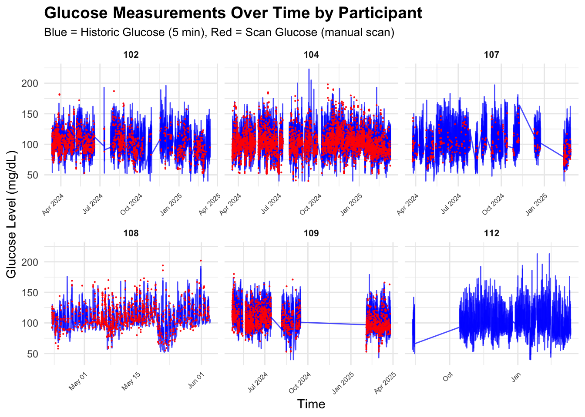
Description: filter out all columns not needed and filter out all glucose levels, which are not historic glucose levels (which are scan glucose levels)
# Filter out rows with NA or infinite values in Timestamp and Glucose levels columns
cleaned_data <- combined_data %>%
filter(!is.na(Timestamp), !is.na(`Glucose levels (mg/dl)`), is.finite(`Glucose levels (mg/dl)`))
head(cleaned_data) Device Serial.Number DeviceTimestamp
1 FreeStyle Libre 3 445B278E-A42C-4AAD-9A7F-133BF591A6A7 11-03-2024 09:07
2 FreeStyle Libre 3 445B278E-A42C-4AAD-9A7F-133BF591A6A7 11-03-2024 09:12
3 FreeStyle Libre 3 445B278E-A42C-4AAD-9A7F-133BF591A6A7 11-03-2024 09:17
4 FreeStyle Libre 3 445B278E-A42C-4AAD-9A7F-133BF591A6A7 11-03-2024 09:22
5 FreeStyle Libre 3 445B278E-A42C-4AAD-9A7F-133BF591A6A7 11-03-2024 09:27
6 FreeStyle Libre 3 445B278E-A42C-4AAD-9A7F-133BF591A6A7 11-03-2024 09:32
Timestamp Record.Type Glucose levels (mg/dl)
1 2024-03-11 09:07:00 0 94
2 2024-03-11 09:12:00 0 90
3 2024-03-11 09:17:00 0 90
4 2024-03-11 09:22:00 0 92
5 2024-03-11 09:27:00 0 97
6 2024-03-11 09:32:00 0 98
Scan glucose levels (mg/dl) Non.numeric.Rapid.Acting.Insulin
1 NA NA
2 NA NA
3 NA NA
4 NA NA
5 NA NA
6 NA NA
Rapid.Acting.Insulin..units. Non.numeric.Food Carbohydrates..grams.
1 NA NA NA
2 NA NA NA
3 NA NA NA
4 NA NA NA
5 NA NA NA
6 NA NA NA
Carbohydrates..servings. Non.numeric.Long.Acting.Insulin
1 NA NA
2 NA NA
3 NA NA
4 NA NA
5 NA NA
6 NA NA
Long.Acting.Insulin.Value..units. Notes Strip.Glucose.mg.dL Ketone.mmol.L
1 NA NA NA
2 NA NA NA
3 NA NA NA
4 NA NA NA
5 NA NA NA
6 NA NA NA
Meal.Insulin..units. Correction.Insulin..units. User.Change.Insulin..units.
1 NA NA NA
2 NA NA NA
3 NA NA NA
4 NA NA NA
5 NA NA NA
6 NA NA NA
ID FreeStyle.Libre.3 X445B278E.A42C.4AAD.9A7F.133BF591A6A7 X11.03.2024.09.07
1 102 <NA> <NA> <NA>
2 102 <NA> <NA> <NA>
3 102 <NA> <NA> <NA>
4 102 <NA> <NA> <NA>
5 102 <NA> <NA> <NA>
6 102 <NA> <NA> <NA>
X2024.03.11.09.07.00 X0 X94 NA. X102Ecosleep X94.1 X0.1
1 <NA> NA NA NA <NA> NA NA
2 <NA> NA NA NA <NA> NA NA
3 <NA> NA NA NA <NA> NA NA
4 <NA> NA NA NA <NA> NA NA
5 <NA> NA NA NA <NA> NA NA
6 <NA> NA NA NA <NA> NA NA
X2024.03.11.09.07.00.1 X9 Day Normal X102 X2024.03.11.09.07.00.2
1 <NA> NA <NA> <NA> NA <NA>
2 <NA> NA <NA> <NA> NA <NA>
3 <NA> NA <NA> <NA> NA <NA>
4 <NA> NA <NA> <NA> NA <NA>
5 <NA> NA <NA> <NA> NA <NA>
6 <NA> NA <NA> <NA> NA <NA>
X9.11666666666667 X96.7828932365961 Glucose (mg/dl)
1 NA NA 94
2 NA NA 90
3 NA NA 90
4 NA NA 92
5 NA NA 97
6 NA NA 98cleaned_data <- cleaned_data %>%
select(-Rapid.Acting.Insulin..units., -Ketone.mmol.L, -Non.numeric.Rapid.Acting.Insulin, -Non.numeric.Food, -Carbohydrates..grams.,-Carbohydrates..servings., -Non.numeric.Long.Acting.Insulin, -Long.Acting.Insulin.Value..units., -Notes, -Strip.Glucose.mg.dL, -Meal.Insulin..units., -Correction.Insulin..units., -User.Change.Insulin..units.)Description: check if there are missings in glucose values
# Add a column to indicate missing or non-finite values in Glucose (1 = Missing/Non-finite, 0 = Present)
cleaned_data <- cleaned_data %>%
mutate(
Missing = ifelse(is.na(`Glucose (mg/dl)`) | !is.finite(`Glucose (mg/dl)`), 1, 0)
)
# Check how many columns have the value 1 in Missings
sum(cleaned_data$Missing == 1)[1] 0Description: Create a table showing an overview of expected number versus real number of measurements per ID per Month
# Step 1: Determine the start date for each ID (earliest timestamp)
id_start_dates <- cleaned_data %>%
group_by(ID) %>%
summarise(Start_Date = min(Timestamp, na.rm = TRUE) , .groups = "drop")
# Step 2: Join the start date back to the main data and filter to include only records from the start date onward
cleaned_data_filtered <- cleaned_data %>%
left_join(id_start_dates, by = "ID") %>%
filter(Timestamp >= Start_Date | is.na(Timestamp)) # Include rows where Timestamp is NA as wellDescription: Table with overview
# Add Month and Year
glucose_monthly_summary <- cleaned_data %>%
mutate(
Month = floor_date(Timestamp, "month")
) %>%
group_by(ID, Month) %>%
summarise(
Measured_Values = n(), # Measured Values
Days_Observed = n_distinct(as.Date(Timestamp)), # Observed Days per Month
Expected_Values = Days_Observed * 288, # Expected: 288 per Day
Missing_Values = Expected_Values - Measured_Values,
Missing_Percentage = round((Missing_Values / Expected_Values) * 100, 2),
.groups = "drop"
)
# Show Data Set
glucose_monthly_summary# A tibble: 55 × 7
ID Month Measured_Values Days_Observed Expected_Values
<chr> <dttm> <int> <int> <dbl>
1 102 2024-03-01 00:00:00 5896 21 6048
2 102 2024-04-01 00:00:00 8244 31 8928
3 102 2024-05-01 00:00:00 7502 29 8352
4 102 2024-06-01 00:00:00 4898 19 5472
5 102 2024-07-01 00:00:00 2084 9 2592
6 102 2024-08-01 00:00:00 7502 28 8064
7 102 2024-09-01 00:00:00 8019 30 8640
8 102 2024-10-01 00:00:00 6023 23 6624
9 102 2024-11-01 00:00:00 3787 14 4032
10 102 2024-12-01 00:00:00 5947 24 6912
# ℹ 45 more rows
# ℹ 2 more variables: Missing_Values <dbl>, Missing_Percentage <dbl>Description: Add months to table when no measurement took place
# Schritt 1: Monat berechnen
data_with_month <- cleaned_data %>%
mutate(
Month = floor_date(Timestamp, "month")
)
# Schritt 2: Erster Monat pro ID
first_months <- data_with_month %>%
group_by(ID) %>%
summarise(First_Month = min(Month), .groups = "drop")
# Schritt 3: Vollständigen Monatsraster erzeugen (13 Monate ab Start)
full_months_per_id <- first_months %>%
rowwise() %>%
mutate(
Month = list(seq(First_Month, by = "1 month", length.out = 13))
) %>%
unnest(Month) %>%
ungroup()
# Schritt 4: Tatsächlich gemessene Werte zählen pro ID und Monat
monthly_counts <- data_with_month %>%
group_by(ID, Month) %>%
summarise(
Measured_Values = n(),
Days_Observed = n_distinct(as.Date(Timestamp)),
.groups = "drop"
)
# Schritt 5: Join mit vollständigem Raster + fehlende Werte auffüllen
monthly_summary <- full_months_per_id %>%
left_join(monthly_counts, by = c("ID", "Month")) %>%
mutate(
Measured_Values = replace_na(Measured_Values, 0),
Days_Observed = replace_na(Days_Observed, 0),
Expected_Values = days_in_month(Month) * 24 * 12, # 12 Messungen pro Stunde bei 5-minütiger Frequenz
Missing_Values = Expected_Values - Measured_Values,
Missing_Percentage = ifelse(Expected_Values == 0, NA, round((Missing_Values / Expected_Values) * 100, 2))
)Description: Duplicates were found, because Missings were minus –> remove duplicates using cleaned_data_filtered
#check for duplicates first
cleaned_data_filtered %>%
group_by(ID, Timestamp) %>%
filter(n() > 1)# A tibble: 2,940 × 29
# Groups: ID, Timestamp [1,470]
Device Serial.Number DeviceTimestamp Timestamp Record.Type
<chr> <chr> <chr> <dttm> <int>
1 FreeStyle Libr… 445B278E-A42… 17-05-2024 15:… 2024-05-17 15:16:00 0
2 FreeStyle Libr… 445B278E-A42… 17-05-2024 15:… 2024-05-17 15:16:00 0
3 FreeStyle Libr… 445B278E-A42… 17-05-2024 15:… 2024-05-17 15:21:00 0
4 FreeStyle Libr… 445B278E-A42… 17-05-2024 15:… 2024-05-17 15:21:00 0
5 FreeStyle Libr… 445B278E-A42… 17-05-2024 15:… 2024-05-17 15:26:00 0
6 FreeStyle Libr… 445B278E-A42… 17-05-2024 15:… 2024-05-17 15:26:00 0
7 FreeStyle Libr… 445B278E-A42… 17-05-2024 15:… 2024-05-17 15:31:00 0
8 FreeStyle Libr… 445B278E-A42… 17-05-2024 15:… 2024-05-17 15:31:00 0
9 FreeStyle Libr… 445B278E-A42… 17-05-2024 15:… 2024-05-17 15:36:00 0
10 FreeStyle Libr… 445B278E-A42… 17-05-2024 15:… 2024-05-17 15:36:00 0
# ℹ 2,930 more rows
# ℹ 24 more variables: `Glucose levels (mg/dl)` <int>,
# `Scan glucose levels (mg/dl)` <int>, ID <chr>, FreeStyle.Libre.3 <chr>,
# X445B278E.A42C.4AAD.9A7F.133BF591A6A7 <chr>, X11.03.2024.09.07 <chr>,
# X2024.03.11.09.07.00 <chr>, X0 <int>, X94 <int>, NA. <lgl>,
# X102Ecosleep <chr>, X94.1 <int>, X0.1 <int>, X2024.03.11.09.07.00.1 <chr>,
# X9 <int>, Day <chr>, Normal <chr>, X102 <int>, …Description: Check for duplicates
# All Duplicates
dup_timestamps <- cleaned_data_filtered %>%
group_by(ID, Timestamp) %>%
filter(n() > 1) %>%
arrange(ID, Timestamp)exact_duplicates <- dup_timestamps %>%
group_by(ID, Timestamp, `Glucose (mg/dl)`, Serial.Number) %>%
filter(n() > 1) %>%
ungroup()
exact_duplicates# A tibble: 14 × 29
Device Serial.Number DeviceTimestamp Timestamp Record.Type
<chr> <chr> <chr> <dttm> <int>
1 FreeStyle Libr… 445B278E-A42… 05-08-2024 15:… 2024-08-05 15:34:00 0
2 FreeStyle Libr… 445B278E-A42… 05-08-2024 15:… 2024-08-05 15:34:00 0
3 FreeStyle Libr… 445B278E-A42… 24-11-2024 08:… 2024-11-24 08:06:00 0
4 FreeStyle Libr… 445B278E-A42… 24-11-2024 08:… 2024-11-24 08:06:00 0
5 FreeStyle Libr… 445B278E-A42… 24-11-2024 08:… 2024-11-24 08:11:00 0
6 FreeStyle Libr… 445B278E-A42… 24-11-2024 08:… 2024-11-24 08:11:00 0
7 FreeStyle Libr… DBE03CAB-A7A… 13-12-2024 11:… 2024-12-13 11:05:00 0
8 FreeStyle Libr… DBE03CAB-A7A… 13-12-2024 11:… 2024-12-13 11:05:00 0
9 FreeStyle Libr… DBE03CAB-A7A… 13-12-2024 11:… 2024-12-13 11:55:00 0
10 FreeStyle Libr… DBE03CAB-A7A… 13-12-2024 11:… 2024-12-13 11:55:00 0
11 FreeStyle Libr… 31C3AD69-BB1… 18-06-2024 09:… 2024-06-18 09:54:00 0
12 FreeStyle Libr… 31C3AD69-BB1… 18-06-2024 09:… 2024-06-18 09:54:00 0
13 FreeStyle Libr… 31C3AD69-BB1… 27-10-2024 02:… 2024-10-27 02:56:00 0
14 FreeStyle Libr… 31C3AD69-BB1… 27-10-2024 02:… 2024-10-27 02:56:00 0
# ℹ 24 more variables: `Glucose levels (mg/dl)` <int>,
# `Scan glucose levels (mg/dl)` <int>, ID <chr>, FreeStyle.Libre.3 <chr>,
# X445B278E.A42C.4AAD.9A7F.133BF591A6A7 <chr>, X11.03.2024.09.07 <chr>,
# X2024.03.11.09.07.00 <chr>, X0 <int>, X94 <int>, NA. <lgl>,
# X102Ecosleep <chr>, X94.1 <int>, X0.1 <int>, X2024.03.11.09.07.00.1 <chr>,
# X9 <int>, Day <chr>, Normal <chr>, X102 <int>,
# X2024.03.11.09.07.00.2 <chr>, X9.11666666666667 <dbl>, …conflicting_duplicates <- dup_timestamps %>%
group_by(ID, Timestamp, Serial.Number) %>%
filter(n_distinct(`Glucose (mg/dl)`) > 1) %>%
ungroup()
conflict_summary <- conflicting_duplicates %>%
count(ID, name = "Conflicting_Measurements")
conflict_summary# A tibble: 3 × 2
ID Conflicting_Measurements
<chr> <int>
1 102 132
2 104 44
3 107 22Description: Plotting those exact duplicates
# 1. laufende Nummerierung erstellen
conflicting_duplicates <- conflicting_duplicates %>%
group_by(ID, Timestamp, Serial.Number) %>%
filter(n_distinct(`Glucose (mg/dl)`) > 1) %>%
mutate(Glucose_Row = row_number()) %>%
ungroup()
# 2. In Wide-Format bringen (zwei Glucose-Werte nebeneinander)
conflicts_wide <- conflicting_duplicates %>%
select(ID, Timestamp, Serial.Number, `Glucose (mg/dl)`, Glucose_Row) %>%
pivot_wider(
names_from = Glucose_Row,
values_from = `Glucose (mg/dl)`,
names_prefix = "Glucose_"
) %>%
filter(!is.na(Glucose_1) & !is.na(Glucose_2))
# 3. Scatterplot: Glucose_1 vs Glucose_2
ggplot(conflicts_wide, aes(x = Glucose_1, y = Glucose_2, color = ID)) +
geom_point(alpha = 0.7) +
geom_abline(slope = 1, intercept = 0, linetype = "dashed", color = "gray") +
labs(
title = "Comparison of glucose values in conflicting duplicates \n(same timestamp, same serialnumber)",
x = "Glucose Value 1",
y = "Glucose Value 2",
color = "ID"
) +
theme_minimal()
Description: Checking differences of duplicates
conflicts_wide <- conflicts_wide %>%
mutate(duplicate_difference = Glucose_2 - Glucose_1)
ggplot(conflicts_wide, aes(x = duplicate_difference, fill = ID)) +
geom_histogram(binwidth = 1, alpha = 0.6, position = "identity") +
geom_vline(xintercept = 0, linetype = "dashed", color = "gray") +
labs(
title = "Differences between Glucose Values",
x = "Difference: Glucose (mg/dl)",
y = "Number",
fill = "ID"
) +
theme_minimal()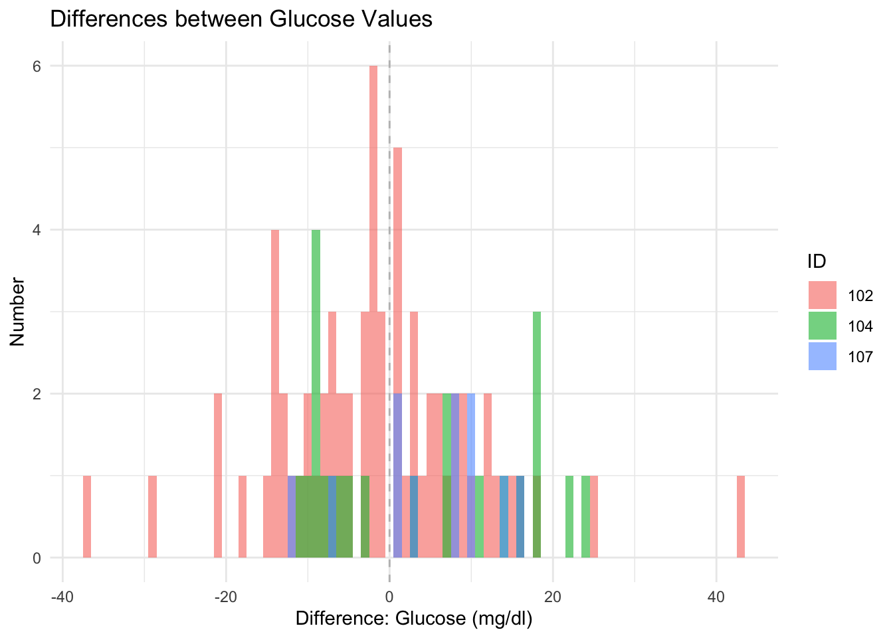
duplicates_diff_serial <- dup_timestamps %>%
group_by(ID, Timestamp, `Glucose (mg/dl)`) %>%
filter(n_distinct(Serial.Number) > 1) %>%
ungroup()
summary_diff_serial <- duplicates_diff_serial %>%
count(ID, name = "Same_Glucose_Diff_Serial_Count")
summary_diff_serial# A tibble: 1 × 2
ID Same_Glucose_Diff_Serial_Count
<chr> <int>
1 109 2728Description: Calculate timegaps
time_gaps <- cleaned_data_filtered %>%
arrange(ID, Timestamp) %>%
group_by(ID) %>%
mutate(
Time_Diff_Minutes = as.numeric(difftime(Timestamp, lag(Timestamp), units = "mins"))
) %>%
ungroup()
time_gaps# A tibble: 324,056 × 30
Device Serial.Number DeviceTimestamp Timestamp Record.Type
<chr> <chr> <chr> <dttm> <int>
1 FreeStyle Libr… 445B278E-A42… 11-03-2024 09:… 2024-03-11 09:07:00 0
2 FreeStyle Libr… 445B278E-A42… 11-03-2024 09:… 2024-03-11 09:12:00 0
3 FreeStyle Libr… 445B278E-A42… 11-03-2024 09:… 2024-03-11 09:17:00 0
4 FreeStyle Libr… 445B278E-A42… 11-03-2024 09:… 2024-03-11 09:22:00 0
5 FreeStyle Libr… 445B278E-A42… 11-03-2024 09:… 2024-03-11 09:27:00 0
6 FreeStyle Libr… 445B278E-A42… 11-03-2024 09:… 2024-03-11 09:32:00 0
7 FreeStyle Libr… 445B278E-A42… 11-03-2024 09:… 2024-03-11 09:37:00 0
8 FreeStyle Libr… 445B278E-A42… 11-03-2024 09:… 2024-03-11 09:42:00 0
9 FreeStyle Libr… 445B278E-A42… 11-03-2024 09:… 2024-03-11 09:47:00 0
10 FreeStyle Libr… 445B278E-A42… 11-03-2024 09:… 2024-03-11 09:52:00 0
# ℹ 324,046 more rows
# ℹ 25 more variables: `Glucose levels (mg/dl)` <int>,
# `Scan glucose levels (mg/dl)` <int>, ID <chr>, FreeStyle.Libre.3 <chr>,
# X445B278E.A42C.4AAD.9A7F.133BF591A6A7 <chr>, X11.03.2024.09.07 <chr>,
# X2024.03.11.09.07.00 <chr>, X0 <int>, X94 <int>, NA. <lgl>,
# X102Ecosleep <chr>, X94.1 <int>, X0.1 <int>, X2024.03.11.09.07.00.1 <chr>,
# X9 <int>, Day <chr>, Normal <chr>, X102 <int>, …gaps_over_6min <- time_gaps %>%
filter(!is.na(Time_Diff_Minutes) & Time_Diff_Minutes > 6)
gaps_over_6min# A tibble: 258 × 30
Device Serial.Number DeviceTimestamp Timestamp Record.Type
<chr> <chr> <chr> <dttm> <int>
1 FreeStyle Libr… 445B278E-A42… 14-03-2024 19:… 2024-03-14 19:22:00 0
2 FreeStyle Libr… 445B278E-A42… 25-03-2024 10:… 2024-03-25 10:26:00 0
3 FreeStyle Libr… 445B278E-A42… 29-03-2024 19:… 2024-03-29 19:41:00 0
4 FreeStyle Libr… 445B278E-A42… 01-04-2024 15:… 2024-04-01 15:31:00 0
5 FreeStyle Libr… 445B278E-A42… 04-04-2024 12:… 2024-04-04 12:21:00 0
6 FreeStyle Libr… 445B278E-A42… 09-04-2024 10:… 2024-04-09 10:40:00 0
7 FreeStyle Libr… 445B278E-A42… 11-04-2024 19:… 2024-04-11 19:35:00 0
8 FreeStyle Libr… 445B278E-A42… 11-04-2024 20:… 2024-04-11 20:00:00 0
9 FreeStyle Libr… 445B278E-A42… 11-04-2024 20:… 2024-04-11 20:20:00 0
10 FreeStyle Libr… 445B278E-A42… 11-04-2024 22:… 2024-04-11 22:20:00 0
# ℹ 248 more rows
# ℹ 25 more variables: `Glucose levels (mg/dl)` <int>,
# `Scan glucose levels (mg/dl)` <int>, ID <chr>, FreeStyle.Libre.3 <chr>,
# X445B278E.A42C.4AAD.9A7F.133BF591A6A7 <chr>, X11.03.2024.09.07 <chr>,
# X2024.03.11.09.07.00 <chr>, X0 <int>, X94 <int>, NA. <lgl>,
# X102Ecosleep <chr>, X94.1 <int>, X0.1 <int>, X2024.03.11.09.07.00.1 <chr>,
# X9 <int>, Day <chr>, Normal <chr>, X102 <int>, …summary_over_6min <- gaps_over_6min %>%
count (ID, name = "Gaps_More_Than_6min")
summary_over_6min_detail <- gaps_over_6min %>%
group_by(ID, Time_Diff_Minutes) %>%
summarise(
Count = n(),
.groups = "drop"
) %>%
arrange(ID, Time_Diff_Minutes)gaps_1_to_3_min <- time_gaps %>%
filter(!is.na(Time_Diff_Minutes) & Time_Diff_Minutes >= 1 & Time_Diff_Minutes <= 3)
summary_1_to_3_min <- gaps_1_to_3_min %>%
count(ID, name = "Gaps_Between_1_and_3min")Description: Categorize time gaps
time_gaps_plot <- time_gaps %>%
mutate(
Gap_Category = case_when(
is.na(Time_Diff_Minutes) ~ NA_character_,
Time_Diff_Minutes >= 1 & Time_Diff_Minutes <= 3 ~ "Between 1 and 3",
Time_Diff_Minutes > 6 ~ "Over 6 min",
Time_Diff_Minutes == 0 ~ "Duplicate",
TRUE ~ "Normal (4-6 min)"
)
)ggplot(time_gaps_plot, aes(x = Timestamp)) +
# Normaler Bereich (4–6 Minuten) – als Hintergrund
geom_point(
data = subset(time_gaps_plot, Gap_Category == "Normal (4-6 min)"),
aes(y = Time_Diff_Minutes),
color = "gray70", alpha = 0.8, size = 1.5
) +
# Gaps > 6 Minuten – rot
geom_point(
data = subset(time_gaps_plot, Gap_Category == "Over 6 min"),
aes(y = Time_Diff_Minutes),
color = "red3", alpha = 0.8, size = 1.5
) +
# Gaps zwischen 1–3 Minuten – grün
geom_point(
data = subset(time_gaps_plot, Gap_Category == "Between 1 and 3"),
aes(y = Time_Diff_Minutes),
color = "green3", alpha = 0.8, size = 1.5
) +
labs(
title = "Zeitabstände zwischen Glukosemessungen pro ID",
subtitle = "Rot = >6min, Grün = 1–3min, Grau = 4–6min",
x = "Zeitpunkt",
y = "Zeitabstand zur vorherigen Messung (Minuten)"
) +
facet_wrap(~ ID, scales = "free_x") +
theme_minimal() +
theme(
axis.text.x = element_text(angle = 45, hjust = 1),
strip.text = element_text(face = "bold")
)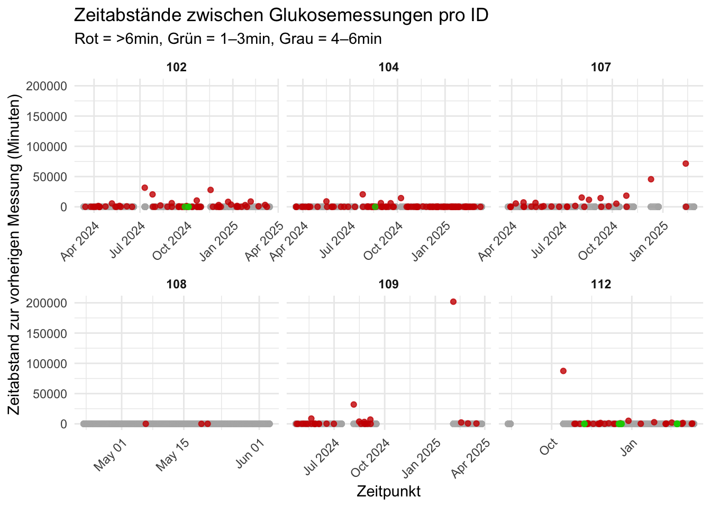
Description: Check how many serial numbers per ID
serial_number_summary <- cleaned_data_filtered %>%
group_by(ID, Serial.Number) %>%
summarise(
First_Timestamp = min(Timestamp, na.rm = TRUE),
Last_Timestamp = max(Timestamp, na.rm = TRUE),
Count = n(),
.groups = "drop"
) %>%
arrange(ID, First_Timestamp)
serial_number_summary# A tibble: 8 × 5
ID Serial.Number First_Timestamp Last_Timestamp Count
<chr> <chr> <dttm> <dttm> <int>
1 102 445B278E-A42C-4AAD-9A7F-1… 2024-03-11 09:07:00 2025-03-14 14:53:00 77366
2 104 6BEA15A5-6DDE-488C-89DB-4… 2024-03-18 08:54:00 2024-05-10 07:47:00 15178
3 104 DBE03CAB-A7A2-4E06-9617-A… 2024-05-16 13:00:00 2025-03-12 22:46:00 76461
4 107 31C3AD69-BB17-44A8-8489-B… 2024-03-25 09:03:00 2025-02-26 12:39:00 56134
5 108 0175A853-C2D3-46AD-95D7-4… 2024-04-22 10:13:00 2024-06-03 07:50:00 12035
6 109 2dca51a8-cc16-4887-b718-1… 2024-04-22 11:35:00 2024-06-08 08:51:00 11680
7 109 F6C5F96A-7168-44F8-B964-5… 2024-06-03 15:01:00 2025-03-26 11:08:00 34854
8 112 NAGD171-G1255 2024-08-11 22:51:00 2025-03-13 09:22:00 40348Description Step 1: deduplicate: exact duplicates
cleaned_data_deduplicated <- cleaned_data_filtered %>%
distinct(ID, Timestamp, Serial.Number, `Glucose (mg/dl)`, .keep_all = TRUE)Description Step 2: deduplicate: duplicates with same timestamp and glucose value but not same serial number
cleaned_data_deduplicated <- cleaned_data_deduplicated %>%
distinct(ID, Timestamp, `Glucose (mg/dl)`, .keep_all = TRUE)Description Step 3: deduplicate: duplicates with same timestamp but different glucose value
cleaned_data_deduplicated <- anti_join(
cleaned_data_deduplicated,
conflicting_duplicates,
by = c("ID", "Timestamp", "Serial.Number", "Glucose (mg/dl)")
)Description: check how many rows were deleted
nrow(cleaned_data_filtered) - nrow(cleaned_data_deduplicated)[1] 1569Description: per ID, check how many data points there are from the first day of measurement on for one year
# 102
target_id_102 <- "102"
start_date_102 <- as.Date("2024-03-11")
# Filter for this ID and 1-year window
filtered_data_102 <- cleaned_data_deduplicated %>%
filter(
ID == target_id_102,
Timestamp >= start_date_102,
Timestamp < start_date_102 + years(1)
)
# Count number of measurements
measurement_count_102 <- nrow(filtered_data_102)
# 104
target_id_104 <- "104"
start_date_104 <- as.Date("2024-03-18")
# Filter for this ID and 1-year window
filtered_data_104 <- cleaned_data_deduplicated %>%
filter(
ID == target_id_104,
Timestamp >= start_date_104,
Timestamp < start_date_104 + years(1)
)
# Count number of measurements
measurement_count_104 <- nrow(filtered_data_104)
# 107
target_id_107 <- "107"
start_date_107 <- as.Date("2024-03-25")
# Filter for this ID and 1-year window
filtered_data_107 <- cleaned_data_deduplicated %>%
filter(
ID == target_id_107,
Timestamp >= start_date_107,
Timestamp < start_date_107 + years(1)
)
# Count number of measurements
measurement_count_107 <- nrow(filtered_data_107)
# 108
target_id_108 <- "108"
start_date_108 <- as.Date("2024-04-22")
# Filter for this ID and 1-year window
filtered_data_108 <- cleaned_data_deduplicated %>%
filter(
ID == target_id_108,
Timestamp >= start_date_108,
Timestamp < start_date_108 + years(1)
)
# Count number of measurements
measurement_count_108 <- nrow(filtered_data_108)
# 109
target_id_109 <- "109"
start_date_109 <- as.Date("2024-04-22")
# Filter for this ID and 1-year window
filtered_data_109 <- cleaned_data_deduplicated %>%
filter(
ID == target_id_109,
Timestamp >= start_date_109,
Timestamp < start_date_109 + years(1)
)
# Count number of measurements
measurement_count_109 <- nrow(filtered_data_109)
# 112
target_id_112 <- "112"
start_date_112 <- as.Date("2024-08-11")
# Filter for this ID and 1-year window
filtered_data_112 <- cleaned_data_deduplicated %>%
filter(
ID == target_id_112,
Timestamp >= start_date_112,
Timestamp < start_date_112 + years(1)
)
# Count number of measurements
measurement_count_112 <- nrow(filtered_data_112)Description: hypo < 70 and hyper > 180
cleaned_data_deduplicated %>%
mutate(
Glucose_Category = case_when(
`Glucose (mg/dl)` < 70 ~ "Hypo",
`Glucose (mg/dl)` > 180 ~ "Hyper",
TRUE ~ "Normal"
)
) %>%
group_by(ID, Glucose_Category) %>%
summarise(Count = n(), .groups = "drop") %>%
group_by(ID) %>%
mutate(Percentage = round(Count / sum(Count) * 100, 1))# A tibble: 17 × 4
# Groups: ID [6]
ID Glucose_Category Count Percentage
<chr> <chr> <int> <dbl>
1 102 Hyper 12 0
2 102 Hypo 1544 2
3 102 Normal 75675 98
4 104 Hyper 25 0
5 104 Hypo 2273 2.5
6 104 Normal 89295 97.5
7 107 Hyper 11 0
8 107 Hypo 1202 2.1
9 107 Normal 54897 97.8
10 108 Hyper 4 0
11 108 Hypo 327 2.7
12 108 Normal 11704 97.2
13 109 Hypo 279 0.6
14 109 Normal 44891 99.4
15 112 Hyper 32 0.1
16 112 Hypo 1010 2.5
17 112 Normal 39306 97.4Description: Adding Day and Night to Dataset: Night from 22h to 6h
cleaned_data_deduplicated <- cleaned_data_deduplicated %>%
mutate(
Hour = hour(Timestamp),
Time_of_Day = case_when(
Hour >= 6 & Hour < 22 ~ "Day",
TRUE ~ "Night"
)
)Description: Hyper and Hypo in Day and Night
cleaned_data_deduplicated %>%
mutate(
Glucose_Category = case_when(
`Glucose (mg/dl)` < 70 ~ "Hypo",
`Glucose (mg/dl)` > 180 ~ "Hyper",
TRUE ~ "Normal"
)
) %>%
group_by(ID, Time_of_Day, Glucose_Category) %>%
summarise(Count = n(), .groups = "drop") %>%
group_by(ID, Time_of_Day) %>%
mutate(Percentage = round(Count / sum(Count) * 100, 1)) %>%
kable()| ID | Time_of_Day | Glucose_Category | Count | Percentage |
|---|---|---|---|---|
| 102 | Day | Hyper | 12 | 0.0 |
| 102 | Day | Hypo | 683 | 1.3 |
| 102 | Day | Normal | 50695 | 98.6 |
| 102 | Night | Hypo | 861 | 3.3 |
| 102 | Night | Normal | 24980 | 96.7 |
| 104 | Day | Hyper | 18 | 0.0 |
| 104 | Day | Hypo | 1301 | 2.1 |
| 104 | Day | Normal | 59740 | 97.8 |
| 104 | Night | Hyper | 7 | 0.0 |
| 104 | Night | Hypo | 972 | 3.2 |
| 104 | Night | Normal | 29555 | 96.8 |
| 107 | Day | Hyper | 11 | 0.0 |
| 107 | Day | Hypo | 812 | 2.2 |
| 107 | Day | Normal | 36793 | 97.8 |
| 107 | Night | Hypo | 390 | 2.1 |
| 107 | Night | Normal | 18104 | 97.9 |
| 108 | Day | Hyper | 4 | 0.0 |
| 108 | Day | Hypo | 130 | 1.6 |
| 108 | Day | Normal | 7870 | 98.3 |
| 108 | Night | Hypo | 197 | 4.9 |
| 108 | Night | Normal | 3834 | 95.1 |
| 109 | Day | Hypo | 156 | 0.5 |
| 109 | Day | Normal | 29883 | 99.5 |
| 109 | Night | Hypo | 123 | 0.8 |
| 109 | Night | Normal | 15008 | 99.2 |
| 112 | Day | Hyper | 11 | 0.0 |
| 112 | Day | Hypo | 629 | 2.3 |
| 112 | Day | Normal | 26291 | 97.6 |
| 112 | Night | Hyper | 21 | 0.2 |
| 112 | Night | Hypo | 381 | 2.8 |
| 112 | Night | Normal | 13015 | 97.0 |
Description: Hyper and Hypo clinically split
cleaned_data_deduplicated %>%
mutate(
Glucose_Category = case_when(
`Glucose (mg/dl)` < 54 ~ "Very Low", # Severe Hypo
`Glucose (mg/dl)` >= 54 & `Glucose (mg/dl)` < 70 ~ "Low", # Mild Hypo
`Glucose (mg/dl)` >= 70 & `Glucose (mg/dl)` <= 180 ~ "Normal", # In Range
`Glucose (mg/dl)` > 180 & `Glucose (mg/dl)` <= 250 ~ "High", # High
`Glucose (mg/dl)` > 250 ~ "Very High" # Very High
)
) %>%
group_by(ID, Time_of_Day, Glucose_Category) %>%
summarise(Count = n(), .groups = "drop") %>%
group_by(ID, Time_of_Day) %>%
mutate(Percentage = round(Count / sum(Count) * 100, 1)) %>%
kable()| ID | Time_of_Day | Glucose_Category | Count | Percentage |
|---|---|---|---|---|
| 102 | Day | High | 12 | 0.0 |
| 102 | Day | Low | 643 | 1.3 |
| 102 | Day | Normal | 50695 | 98.6 |
| 102 | Day | Very Low | 40 | 0.1 |
| 102 | Night | Low | 762 | 2.9 |
| 102 | Night | Normal | 24980 | 96.7 |
| 102 | Night | Very Low | 99 | 0.4 |
| 104 | Day | High | 18 | 0.0 |
| 104 | Day | Low | 1148 | 1.9 |
| 104 | Day | Normal | 59740 | 97.8 |
| 104 | Day | Very Low | 153 | 0.3 |
| 104 | Night | High | 7 | 0.0 |
| 104 | Night | Low | 832 | 2.7 |
| 104 | Night | Normal | 29555 | 96.8 |
| 104 | Night | Very Low | 140 | 0.5 |
| 107 | Day | High | 11 | 0.0 |
| 107 | Day | Low | 793 | 2.1 |
| 107 | Day | Normal | 36793 | 97.8 |
| 107 | Day | Very Low | 19 | 0.1 |
| 107 | Night | Low | 334 | 1.8 |
| 107 | Night | Normal | 18104 | 97.9 |
| 107 | Night | Very Low | 56 | 0.3 |
| 108 | Day | High | 4 | 0.0 |
| 108 | Day | Low | 119 | 1.5 |
| 108 | Day | Normal | 7870 | 98.3 |
| 108 | Day | Very Low | 11 | 0.1 |
| 108 | Night | Low | 178 | 4.4 |
| 108 | Night | Normal | 3834 | 95.1 |
| 108 | Night | Very Low | 19 | 0.5 |
| 109 | Day | Low | 123 | 0.4 |
| 109 | Day | Normal | 29883 | 99.5 |
| 109 | Day | Very Low | 33 | 0.1 |
| 109 | Night | Low | 99 | 0.7 |
| 109 | Night | Normal | 15008 | 99.2 |
| 109 | Night | Very Low | 24 | 0.2 |
| 112 | Day | High | 11 | 0.0 |
| 112 | Day | Low | 497 | 1.8 |
| 112 | Day | Normal | 26291 | 97.6 |
| 112 | Day | Very Low | 132 | 0.5 |
| 112 | Night | High | 21 | 0.2 |
| 112 | Night | Low | 276 | 2.1 |
| 112 | Night | Normal | 13015 | 97.0 |
| 112 | Night | Very Low | 105 | 0.8 |
Description: Create color code
glucose_category_colors <- c(
"Very Low" = "#990000", # dark red
"Low" = "#e60000", # lighter red
"Normal" = "#228B22", # green
"High" = "#FFA500", # orange
"Very High" = "#CC5500" # dark orange
)Description: Add glucose category to dataset
cleaned_data_deduplicated <- cleaned_data_deduplicated %>%
mutate(
Glucose_Category = case_when(
`Glucose (mg/dl)` < 54 ~ "Very Low",
`Glucose (mg/dl)` >= 54 & `Glucose (mg/dl)` < 70 ~ "Low",
`Glucose (mg/dl)` >= 70 & `Glucose (mg/dl)` <= 180 ~ "Normal",
`Glucose (mg/dl)` > 180 & `Glucose (mg/dl)` <= 250 ~ "High",
`Glucose (mg/dl)` > 250 ~ "Very High"
)
)Description: Create Summary of time in range
time_in_range_summary <- cleaned_data_deduplicated %>%
mutate(
Glucose_Category = case_when(
`Glucose (mg/dl)` < 54 ~ "Very Low",
`Glucose (mg/dl)` >= 54 & `Glucose (mg/dl)` < 70 ~ "Low",
`Glucose (mg/dl)` >= 70 & `Glucose (mg/dl)` <= 180 ~ "Normal",
`Glucose (mg/dl)` > 180 & `Glucose (mg/dl)` <= 250 ~ "High",
`Glucose (mg/dl)` > 250 ~ "Very High"
)
) %>%
group_by(ID, Time_of_Day, Glucose_Category) %>%
summarise(Count = n(), .groups = "drop") %>%
group_by(ID, Time_of_Day) %>%
mutate(Percentage = round(Count / sum(Count) * 100, 1))Description: Create Bar
category_colors <- c(
"Very Low" = "#990000",
"Low" = "#e60000",
"Normal" = "#228B22",
"High" = "#FFA500",
"Very High" = "#CC5500"
)
ggplot(time_in_range_summary, aes(x = Time_of_Day, y = Percentage, fill = Glucose_Category)) +
geom_bar(stat = "identity", position = "stack") +
scale_fill_manual(values = category_colors) +
facet_wrap(~ ID, ncol = 2) +
labs(
title = "Glucose Ranges by Time of Day",
x = "Time of Day",
y = "Percentage",
fill = "Glucose Category"
) +
theme_minimal() +
theme(
legend.position = "top",
strip.text = element_text(face = "bold")
)
Description: Create a different Graph
time_in_range_summary <- time_in_range_summary %>%
mutate(Glucose_Category = factor(
Glucose_Category,
levels = c("Very Low", "Low", "Normal", "High", "Very High")
))
ggplot(time_in_range_summary, aes(x = Glucose_Category, y = Percentage, color = Glucose_Category)) +
geom_segment(aes(xend = Glucose_Category, y = 0, yend = Percentage), size = 0.8) +
geom_point(size = 3) +
geom_text(
aes(label = paste0(Percentage, "%")),
hjust = -0.4,
size = 3,
color = "black"
) +
scale_color_manual(values = category_colors) +
facet_grid(ID ~ Time_of_Day) +
coord_flip(ylim = c(0, 130)) + # <- Add more space beyond 100%
labs(
title = "Glucose Category by ID and Time of Day",
x = "Category",
y = "Percentage (%)"
) +
theme_minimal()
Description: Plot a donut chart
donut_data <- time_in_range_summary %>%
filter(ID == "102", Time_of_Day == "Night")
ggplot(donut_data, aes(x = 2, y = Percentage, fill = Glucose_Category)) +
geom_bar(stat = "identity", width = 1, color = "white") +
coord_polar(theta = "y") +
xlim(0.5, 2.5) + # creates the hole (donut)
scale_fill_manual(values = category_colors) +
geom_text(aes(label = paste0(Percentage, "%")),
position = position_stack(vjust = 0.5), size = 3, color = "black") +
theme_void() +
labs(title = "Glucose Distribution (Night) – 102",
fill = "Glucose Category") +
theme(legend.position = "right")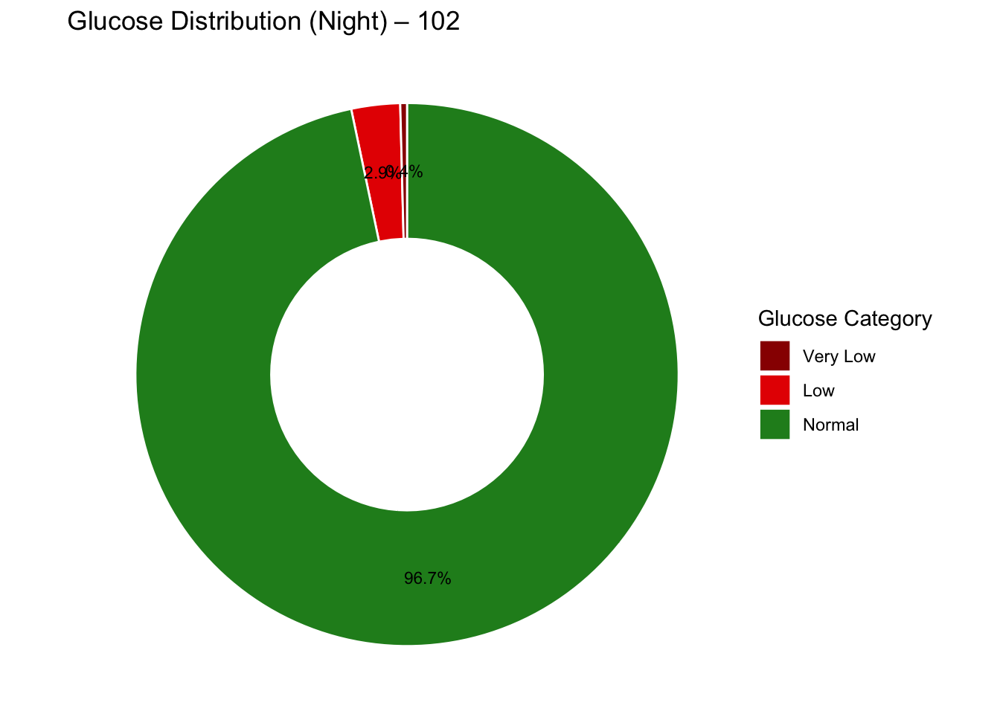
Description: Prepare Dataset
stacked_chart <- cleaned_data_deduplicated %>%
filter(!is.na(Glucose_Category)) %>%
mutate(
Time = floor_date(Timestamp, "5 minutes"),
TimeOnly = format(Time, "%H:%M:%S"),
# POSIXct with reference date
TimeOnly_POSIX = as.POSIXct(TimeOnly, format = "%H:%M:%S", tz = "UTC")
) %>%
count(ID, TimeOnly_POSIX, Glucose_Category) %>%
group_by(ID, TimeOnly_POSIX) %>%
mutate(percentage = n / sum(n)) %>%
ungroup() %>%
complete(ID, TimeOnly_POSIX, Glucose_Category, fill = list(n = 0, percentage = 0)) %>%
mutate(
Glucose_Category = factor(Glucose_Category, levels = c("High", "Normal", "Low", "Very Low"))
)Description: Plot for One ID
ggplot(stacked_chart %>% filter(ID == "102"),
aes(x = TimeOnly_POSIX, y = percentage, fill = Glucose_Category)) +
geom_area() +
scale_x_datetime(date_labels = "%H:%M") +
theme_minimal() +
theme(axis.text.x = element_text(angle = 45, hjust = 1))
Description: Plot for all IDs
ggplot(stacked_chart,
aes(x = TimeOnly_POSIX, y = percentage, fill = Glucose_Category)) +
geom_area() +
scale_x_datetime(date_labels = "%H:%M") +
facet_wrap(~ ID, ncol = 2) +
theme_minimal() +
theme(axis.text.x = element_text(angle = 45, hjust = 1))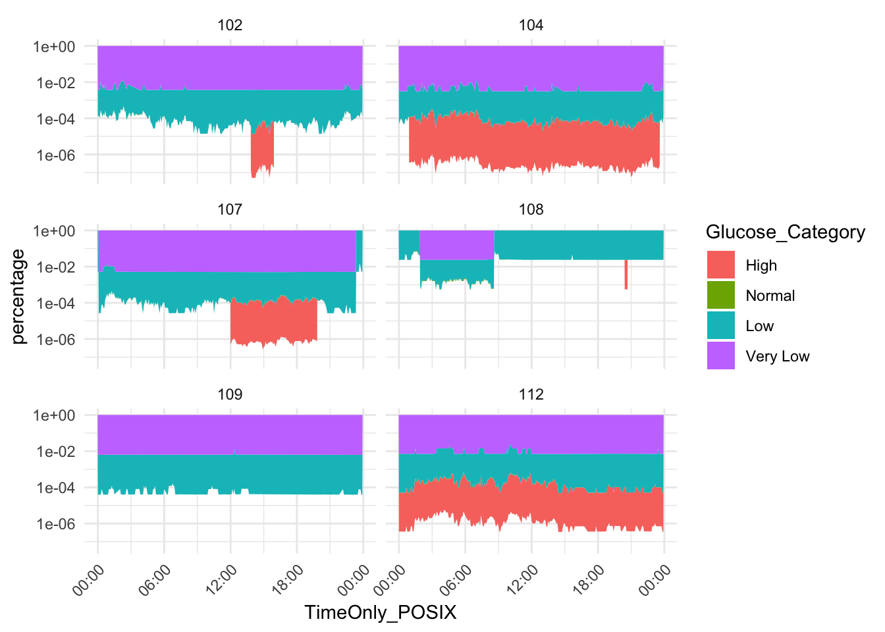
Description: Facet per Category and ID
ggplot(stacked_chart,
aes(x = TimeOnly_POSIX, y = percentage)) +
geom_area(fill = "steelblue") +
facet_grid(Glucose_Category ~ ID) + # Facet per Category & ID
scale_x_datetime(date_labels = "%H:%M") +
theme_minimal() +
theme(axis.text.x = element_text(angle = 45, hjust = 1)) +
labs(y = "Proportion", x = "Time of Day")
Description: log10
ggplot(stacked_chart,
aes(x = TimeOnly_POSIX, y = percentage, fill = Glucose_Category)) +
geom_area() +
scale_x_datetime(date_labels = "%H:%M") +
scale_y_log10()+
facet_wrap(~ ID, ncol = 2) +
theme_minimal() +
theme(axis.text.x = element_text(angle = 45, hjust = 1))Warning in scale_y_log10(): log-10 transformation introduced infinite values.Warning: Removed 3072 rows containing non-finite outside the scale range
(`stat_align()`).
Description: Show lower 25% only
# Reorder "High" to make visualization possible
stacked_chart_25 <- stacked_chart %>%
mutate(
Glucose_Category = factor(Glucose_Category, levels = c("Normal", "High", "Low", "Very Low")))
ggplot(stacked_chart_25,
aes(x = TimeOnly_POSIX, y = percentage, fill = Glucose_Category)) +
geom_area() +
scale_x_datetime(date_labels = "%H:%M") +
coord_cartesian(ylim = c(0, 0.25)) + # only show until 25%
facet_wrap(~ ID, ncol = 2) +
labs(y = "Proportion", x = "Time of Day") +
theme_minimal() +
theme(axis.text.x = element_text(angle = 45, hjust = 1)) +
scale_y_continuous(labels = scales::percent_format(accuracy = 1))
Description: How often does the glucose value change from one category to another
# Prepare data
spike_analysis <- cleaned_data_deduplicated %>%
arrange(ID, Timestamp) %>%
mutate(
Glucose_Category = case_when(
`Glucose (mg/dl)` < 54 ~ "Very Low",
`Glucose (mg/dl)` >= 54 & `Glucose (mg/dl)` < 70 ~ "Low",
`Glucose (mg/dl)` >= 70 & `Glucose (mg/dl)` <= 180 ~ "Normal",
`Glucose (mg/dl)` > 180 & `Glucose (mg/dl)` <= 250 ~ "High",
`Glucose (mg/dl)` > 250 ~ "Very High"
),
Prev_Category = lag(Glucose_Category),
Prev_ID = lag(ID),
Prev_Time_of_Day = lag(Time_of_Day),
Spike = Glucose_Category != Prev_Category & ID == Prev_ID & Time_of_Day == Prev_Time_of_Day
) %>%
filter(Spike) %>%
mutate(
From = Prev_Category,
To = Glucose_Category
) %>%
mutate(
Spike_Direction = paste0(Prev_Category, " → ", Glucose_Category)
) %>%
group_by(ID, Time_of_Day, Spike_Direction, From, To) %>%
summarise(Spike_Count = n(), .groups = "drop")
spike_percent <- spike_analysis %>%
group_by(ID, Time_of_Day) %>%
mutate(
Total_Spikes = sum(Spike_Count),
Percentage = round(100 * Spike_Count / Total_Spikes, 1)
) %>%
ungroup()Description: Plot the Category Change in Percent
ggplot(spike_percent, aes(x = Spike_Direction, y = Percentage, fill = Spike_Direction)) +
geom_col() +
coord_flip() +
facet_grid(ID ~ Time_of_Day) + # Rows = IDs, Columns = Day/Night
labs(
title = "Transitions Between Glucose Categories (Spikes)",
x = "Transition",
y = "Percentage (%)"
) +
theme_minimal() +
theme(
legend.position = "none",
strip.text = element_text(face = "bold", size = 10)
)
Description: Plot the Category Change in Count
ggplot(spike_analysis, aes(x = Spike_Direction, y = Spike_Count, fill = Spike_Direction)) +
geom_col() +
facet_wrap(~ ID) +
coord_flip() +
labs(
title = "Transitions Between Glucose Categories (Spikes)",
x = "Transition",
y = "Count"
) +
theme_minimal() +
theme(legend.position = "none")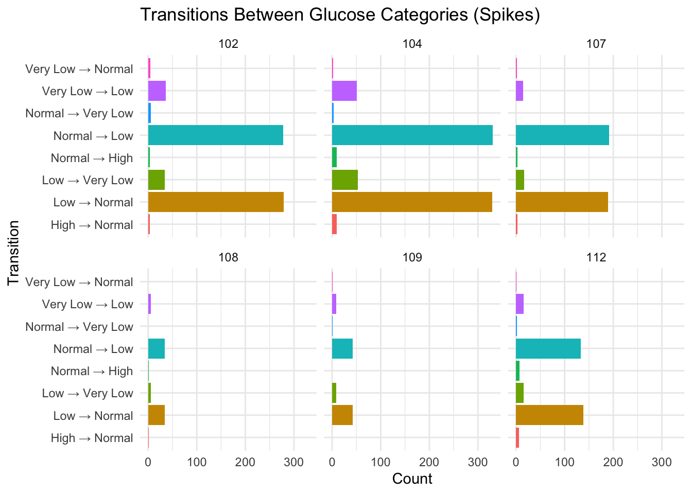
Description: Create a heat map
category_levels <- c("Very Low", "Low", "Normal", "High", "Very High")
spike_percent <- spike_percent %>%
mutate(
From = factor(From, levels = category_levels),
To = factor(To, levels = category_levels)
)
ggplot(spike_percent, aes(x = From, y = To, fill = Percentage)) +
geom_tile(color = "white") +
geom_text(aes(label = Percentage), size = 3) +
facet_grid(ID ~ Time_of_Day) +
scale_fill_gradient(low = "white", high = "steelblue") +
labs(
title = "Transition Heatmap Between Glucose Categories",
x = "Previous Category",
y = "Current Category",
fill = "Percent (%)"
) +
theme_minimal() +
theme(
axis.text.x = element_text(angle = 45, hjust = 1),
strip.text = element_text(face = "bold")
)
Description: Creat a heatmap with heatmap() function and for all IDs
library(pheatmap)
# Summarise raw counts, not percentages
overall_data <- spike_analysis %>%
separate(Spike_Direction, into = c("From", "To"), sep = " → ") %>%
group_by(From, To) %>%
summarise(Total_Spike_Count = sum(Spike_Count), .groups = "drop")
# Total transitions for percentage calculation
total_spikes_all <- sum(overall_data$Total_Spike_Count)
# Compute true overall percentage
overall_data <- overall_data %>%
mutate(
Percentage = round(100 * Total_Spike_Count / total_spikes_all, 1),
From = factor(From, levels = category_levels),
To = factor(To, levels = category_levels)
)
# Create matrix for pheatmap with reversed row order
heatmap_matrix <- matrix(
0,
nrow = length(category_levels),
ncol = length(category_levels),
dimnames = list(From = rev(category_levels), To = category_levels)
)
# Populate matrix
for (i in seq_len(nrow(overall_data))) {
row <- overall_data$From[i]
col <- overall_data$To[i]
val <- overall_data$Percentage[i]
heatmap_matrix[as.character(row), as.character(col)] <- val
}
# Plot with correct percentages: using pheatmap() function to be able to integrate percentages
pheatmap(
heatmap_matrix,
display_numbers = TRUE,
number_format = "%.1f",
color = colorRampPalette(c("white", "steelblue"))(100),
cluster_rows = FALSE,
cluster_cols = FALSE,
main = "Transition Heatmap (Overall Study Percentage)",
angle_col = 45
)
spike_durations <- cleaned_data_deduplicated %>%
arrange(ID, Timestamp) %>%
mutate(
Glucose_Category = case_when(
`Glucose (mg/dl)` < 54 ~ "Very Low",
`Glucose (mg/dl)` >= 54 & `Glucose (mg/dl)` < 70 ~ "Low",
`Glucose (mg/dl)` >= 70 & `Glucose (mg/dl)` <= 180 ~ "Normal",
`Glucose (mg/dl)` > 180 & `Glucose (mg/dl)` <= 250 ~ "High",
`Glucose (mg/dl)` > 250 ~ "Very High"
),
Category_Change = Glucose_Category != lag(Glucose_Category) | ID != lag(ID)
) %>%
# Group consecutive identical categories per ID
mutate(Spike_Group = cumsum(replace_na(Category_Change, TRUE))) %>%
group_by(ID, Spike_Group) %>%
summarise(
Start = min(Timestamp),
End = max(Timestamp),
Duration_min = as.numeric(difftime(max(Timestamp), min(Timestamp), units = "mins")),
Category = first(Glucose_Category),
.groups = "drop"
) %>%
# Filter for spikes only (exclude normal periods)
filter(Category != "Normal")
# View spike durations
head(spike_durations)# A tibble: 6 × 6
ID Spike_Group Start End Duration_min
<chr> <int> <dttm> <dttm> <dbl>
1 102 2 2024-03-12 02:22:00 2024-03-12 02:52:00 30
2 102 4 2024-03-25 20:21:00 2024-03-25 20:21:00 0
3 102 6 2024-03-27 01:11:00 2024-03-27 01:26:00 15
4 102 8 2024-03-28 16:41:00 2024-03-28 16:46:00 5
5 102 10 2024-04-06 08:01:00 2024-04-06 08:01:00 0
6 102 12 2024-04-09 17:20:00 2024-04-09 17:55:00 35
# ℹ 1 more variable: Category <chr>Description: Plot the Spikes over time
ggplot(spike_durations, aes(x = Start, xend = End, y = ID, yend = ID, color = Category)) +
geom_segment(size = 8) +
scale_color_manual(values = category_colors) + # Optional: your color scheme
labs(
title = "Glucose Spikes Over Time",
x = "Time",
y = "Participant ID",
color = "Glucose Category"
) +
theme_minimal() +
theme(
legend.position = "top",
axis.text.y = element_text(face = "bold")
)
cleaned_data_deduplicated <- cleaned_data_deduplicated %>%
mutate(
Hour = hour(Timestamp),
Time_of_Day = case_when(
Hour >= 6 & Hour < 22 ~ "Day",
TRUE ~ "Night"
)
)Description: Plot 1
ggplot(cleaned_data_deduplicated, aes(x = Timestamp, y = `Glucose (mg/dl)`, color = Time_of_Day)) +
geom_point(alpha = 0.5) +
facet_wrap(~ ID, scales = "free_x") +
theme_minimal()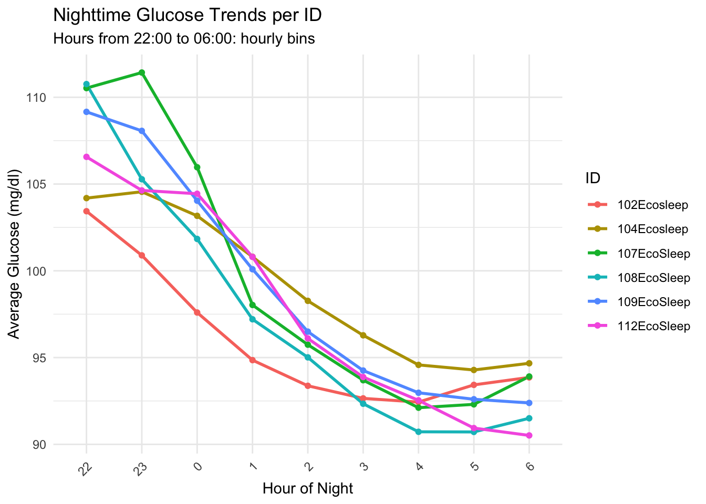
ggplot(cleaned_data_deduplicated, aes(x = Time_of_Day, y = `Glucose (mg/dl)`, fill = Time_of_Day)) +
geom_boxplot(alpha = 0.7) +
facet_wrap(~ ID) +
theme_minimal() +
labs(title = "Glukosevalue: Day vs. Night", x = "", y = "Glucose (mg/dl)")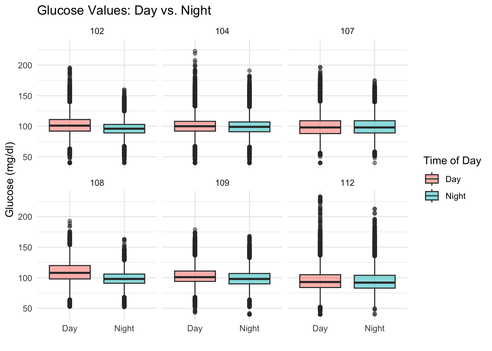
Description: Plot 2
ggplot(cleaned_data_deduplicated, aes(x = Timestamp, y = `Glucose (mg/dl)`, color = Time_of_Day)) +geom_point(alpha = 0.3, size = 1) +
geom_smooth(method = "loess", se = FALSE) +
facet_wrap(~ ID, scales = "free_x") +
scale_color_manual(values = c("Day" = "orange3", "Night" = "midnightblue")) +
labs(
title = "Glucose trend over time: Day vs. Night",
x = "Time",
y = "Glucose (mg/dl)",
color = "Time of Day"
) +
theme_minimal() +
theme(
legend.position = "top",
strip.text = element_text(face = "bold"),
axis.text.x = element_text(angle = 45, hjust = 1)
)`geom_smooth()` using formula = 'y ~ x'
Description: Plot 3: Daily mean over time + standard deviation
# create dataset with mean and standard deviation
cleaned_summary <- cleaned_data_deduplicated %>%
mutate(
Date = as.Date(Timestamp) # date of day
) %>%
group_by(ID, Time_of_Day, Date) %>%
summarise(
mean_glucose = mean(`Glucose (mg/dl)`, na.rm = TRUE),
sd_glucose = sd(`Glucose (mg/dl)`, na.rm = TRUE),
.groups = "drop"
)
# Create Plot
ggplot(cleaned_summary, aes(x = Date, y = mean_glucose, color = Time_of_Day, fill = Time_of_Day)) +
geom_smooth(size = 0.5) +
geom_ribbon(aes(ymin = mean_glucose - sd_glucose, ymax = mean_glucose + sd_glucose), alpha = 0.2, color = NA) +
facet_wrap(~ ID) +
scale_color_manual(values = c("Day" = "orange3", "Night" = "midnightblue")) +
scale_fill_manual(values = c("Day" = "orange3", "Night" = "midnightblue")) +
labs(
title = "Daily Mean Glucose with Standard Deviation (Day vs. Night)",
x = "Date",
y = "Mean Glucose (mg/dl)",
color = "Time of Day",
fill = "Time of Day"
) +
theme_minimal() +
theme(
legend.position = "top",
strip.text = element_text(face = "bold"),
axis.text.x = element_text(angle = 45, hjust = 1)
)`geom_smooth()` using method = 'loess' and formula = 'y ~ x'
Description: Prepare Data for Graph
# Filter for night data
night_data <- cleaned_data_deduplicated %>%
mutate(Hour = hour(Timestamp)) %>%
filter(Hour >= 22 | Hour < 7) %>% # Nighttime: 22 to 6
# Create reordered factor for plotting (22 to 6)
mutate(Hour_Factor = factor(Hour, levels = c(22, 23, 0, 1, 2, 3, 4, 5, 6)))
# Calculate average glucose per hour per ID
night_avg <- night_data %>%
group_by(ID, Hour_Factor) %>%
summarise(
Avg_Glucose = mean(`Glucose (mg/dl)`, na.rm = TRUE),
.groups = "drop"
)Description: Plot the night
ggplot(night_avg, aes(x = Hour_Factor, y = Avg_Glucose, group = ID, color = ID)) +
geom_line(size = 1) +
geom_point(size = 1.5) +
labs(
title = "Nighttime Glucose Trends per ID",
subtitle = "Hours from 22:00 to 06:00: hourly bins",
x = "Hour of Night",
y = "Average Glucose (mg/dl)",
color = "ID"
) +
theme_minimal() +
theme(
axis.text.x = element_text(angle = 45, hjust = 1),
strip.text = element_text(face = "bold")
)
Description: Boxplot of Average Glucose per Hour
#boxplot
ggplot(night_data, aes(x = Hour_Factor, y = `Glucose (mg/dl)`, fill = Hour_Factor)) +
geom_boxplot(outlier.shape = NA, alpha = 0.6) +
facet_wrap(~ ID, ncol = 2) +
scale_fill_brewer(palette = "Blues") +
labs(
title = "Nighttime Glucose Distribution per Hour and ID",
subtitle = "Hours from 22:00 to 06:00",
x = "Hour of Night",
y = "Glucose (mg/dl)",
fill = "Hour"
) +
theme_minimal() +
theme(
axis.text.x = element_text(angle = 45, hjust = 1),
strip.text = element_text(face = "bold")
)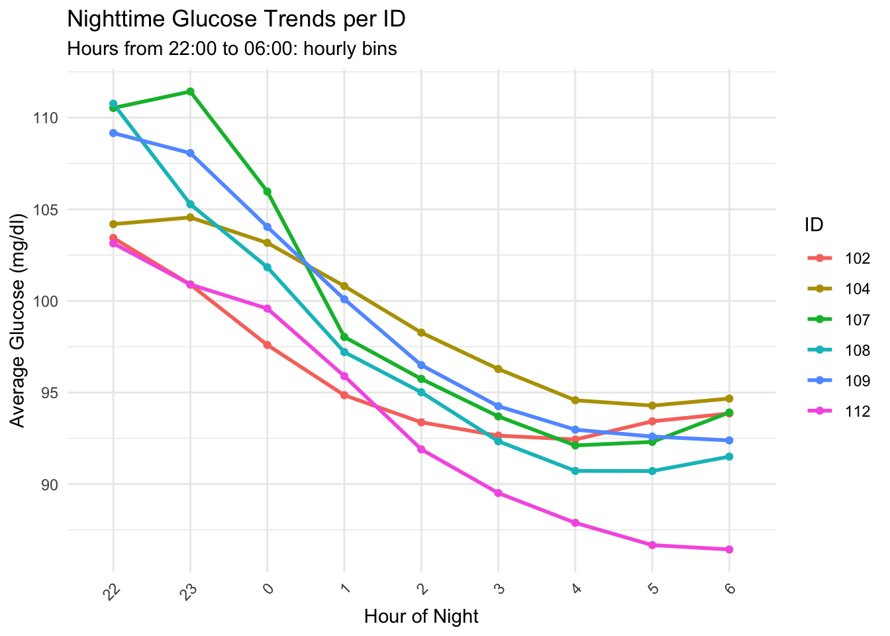
# create 5min bins
night_data <- night_data %>%
mutate(Minute5 = floor_date(Timestamp, unit = "5 minutes"),
Minute5 = format(Minute5, "%H:%M"))
# calculate mean and standard deviation
night_avg_5 <- night_data %>%
group_by(ID, Minute5) %>%
summarise(
Avg_Glucose_5 = mean(`Glucose (mg/dl)`, na.rm = TRUE),
Sd_Glucose_5 = sd(`Glucose (mg/dl)`, na.rm = TRUE),
.groups = "drop"
)
# create levels for right order
levels_ordered <- format(seq.POSIXt(
from = as.POSIXct("2024-01-01 22:00"),
to = as.POSIXct("2024-01-02 06:00"),
by = "5 min"
), "%H:%M")
# create reordered factor for plotting
night_avg_5 <- night_avg_5 %>%
mutate(Minute5_Factor = factor(Minute5, levels = levels_ordered))
# cretae labels for x axis
hour_labels <- format(seq.POSIXt(
from = as.POSIXct("2024-01-01 22:00"),
to = as.POSIXct("2024-01-02 06:00"),
by = "1 hour"
), "%H:%M")
# create one plot for all
ggplot(night_avg_5, aes(x = Minute5_Factor, y = Avg_Glucose_5, group = ID, color = ID, fill = ID)) +
geom_smooth(size = 0.8) +
geom_line(size = 0.5) +
geom_ribbon(aes(ymin = Avg_Glucose_5 - Sd_Glucose_5, ymax = Avg_Glucose_5 + Sd_Glucose_5), alpha = 0.1, color = NA)+
scale_x_discrete(breaks = hour_labels) +
labs(
title = "Nighttime Glucose Trends per ID",
subtitle = "Hours from 22:00 to 06:00: 5min bins",
x = "Hour of Night",
y = "Average Glucose (mg/dl)",
color = "ID"
) +
theme_minimal() +
theme(
axis.text.x = element_text(angle = 45, hjust = 1),
strip.text = element_text(face = "bold")
) `geom_smooth()` using method = 'loess' and formula = 'y ~ x'
# create on eplot per ID
ggplot(night_avg_5, aes(x = Minute5_Factor, y = Avg_Glucose_5, group = ID, color = ID, fill = ID)) +
geom_smooth(size = 0.7) +
geom_line(size = 0.5) +
geom_ribbon(aes(ymin = Avg_Glucose_5 - Sd_Glucose_5, ymax = Avg_Glucose_5 + Sd_Glucose_5), alpha = 0.1, color = NA)+
scale_x_discrete(breaks = hour_labels) +
facet_wrap(~ ID) +
labs(
title = "Nighttime Glucose Trends per ID",
subtitle = "Hours from 22:00 to 06:00: 5min bins",
x = "Hour of Night",
y = "Average Glucose (mg/dl)",
color = "ID"
) +
theme_minimal() +
theme(
axis.text.x = element_text(angle = 45, hjust = 1),
strip.text = element_text(face = "bold")
) `geom_smooth()` using method = 'loess' and formula = 'y ~ x'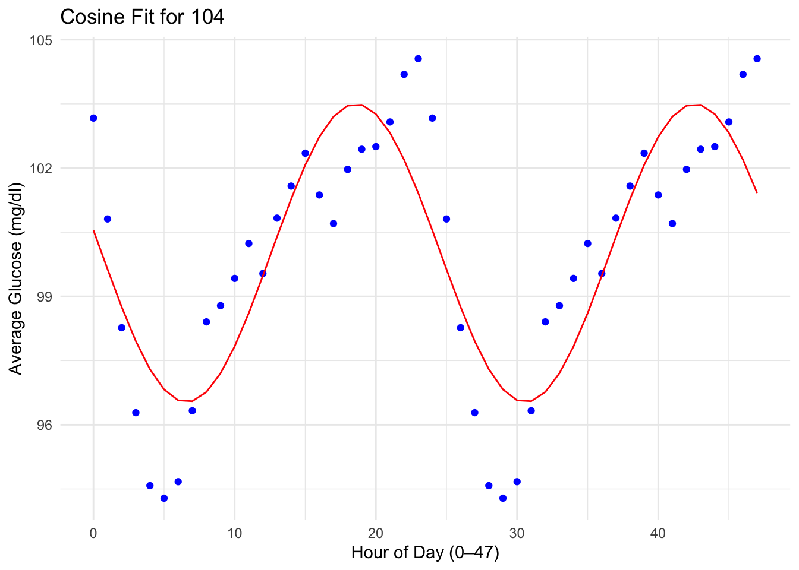
# Extract time-of-day in hours and add ID names without "Ecosleep"
double_data <- cleaned_data_deduplicated %>%
mutate(
Date = as.Date(Timestamp),
Hour = hour(Timestamp),
Minute = minute(Timestamp),
Time_of_Day = Hour + Minute / 60,
)
# Duplicate data: original time + shifted by 24h
double_data_long <- bind_rows(
double_data %>% mutate(Double_Hour = Time_of_Day),
double_data %>% mutate(Double_Hour = Time_of_Day + 24)
)
# Round down to full hour and keep the original 0–47 factor for correct time ordering
double_avg <- double_data_long %>%
mutate(Hour_Rounded = floor(Double_Hour)) %>%
group_by(ID, Hour_Rounded) %>%
summarise(Avg_Glucose = mean(`Glucose (mg/dl)`, na.rm = TRUE), .groups = "drop") %>%
mutate(
Display_Hour = Hour_Rounded %% 24,
Day = ifelse(Hour_Rounded < 24, "Day 1", "Day 2"),
Hour_Label = paste0(Day, " – ", sprintf("%02d:00", Display_Hour)),
Hour_Factor = factor(Hour_Label, levels = c(
paste0("Day 1 – ", sprintf("%02d:00", 0:23)),
paste0("Day 2 – ", sprintf("%02d:00", 0:23))
))
)
# Create the plot
ggplot(double_avg, aes(x = Hour_Factor, y = Avg_Glucose, group = ID, color = ID)) +
geom_line(size = 1) +
geom_point(size = 1.5) +
labs(
title = "Double Plot: 48-Hour Glucose Trends per ID",
subtitle = "Same 24h cycle shown twice to visualize rhythm",
x = "Hour of Day (Repeated)",
y = "Average Glucose (mg/dl)",
color = "ID"
) +
scale_y_continuous(limits = c(85, 120)) +
scale_x_discrete(
breaks = levels(double_avg$Hour_Factor)[seq(1, 48, by = 4)]
) +
theme_minimal() +
theme(
axis.text.x = element_text(angle = 90, hjust = 1, size = 7),
strip.text = element_text(face = "bold")
)
# Filter data for ID 102
fit_data_102 <- double_avg %>% filter(ID == "102")
# Fit cosine model (period 24h)
cos_fit_102 <- nls(
Avg_Glucose ~ A * cos(2 * pi / 24 * Hour_Rounded + phi) + C,
data = fit_data_102,
start = list(A = 10, phi = 0, C = 100) # rough starting guesses
)
summary(cos_fit_102)
Formula: Avg_Glucose ~ A * cos(2 * pi/24 * Hour_Rounded + phi) + C
Parameters:
Estimate Std. Error t value Pr(>|t|)
A -6.37619 0.30189 -21.12 <2e-16 ***
phi -1.17838 0.04735 -24.89 <2e-16 ***
C 99.79182 0.21347 467.47 <2e-16 ***
---
Signif. codes: 0 '***' 0.001 '**' 0.01 '*' 0.05 '.' 0.1 ' ' 1
Residual standard error: 1.479 on 45 degrees of freedom
Number of iterations to convergence: 8
Achieved convergence tolerance: 7.629e-06# Add predicted values
fit_data_102 <- fit_data_102 %>%
mutate(Fitted = predict(cos_fit_102))
# Plot actual vs fitted
ggplot(fit_data_102, aes(x = Hour_Rounded)) +
geom_point(aes(y = Avg_Glucose), color = "blue") +
geom_line(aes(y = Fitted), color = "red") +
labs(
title = "Cosine Fit for 102",
x = "Hour of Day (0–47)",
y = "Average Glucose (mg/dl)"
) +
theme_minimal()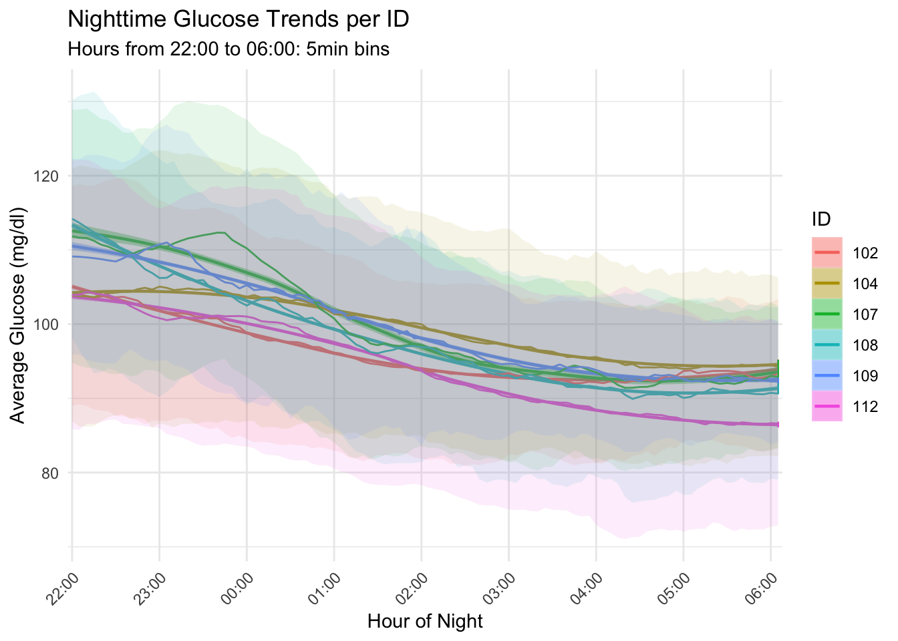
fit_data_104 <- double_avg %>% filter(ID == "104")
cos_fit_104 <- nls(
Avg_Glucose ~ A * cos(2 * pi / 24 * Hour_Rounded + phi) + C,
data = fit_data_104,
start = list(A = 10, phi = 0, C = 100)
)
fit_data_104 <- fit_data_104 %>%
mutate(Fitted = predict(cos_fit_104))
ggplot(fit_data_104, aes(x = Hour_Rounded)) +
geom_point(aes(y = Avg_Glucose), color = "blue") +
geom_line(aes(y = Fitted), color = "red") +
labs(
title = "Cosine Fit for 104",
x = "Hour of Day (0–47)",
y = "Average Glucose (mg/dl)"
) +
theme_minimal()
fit_data_107 <- double_avg %>% filter(ID == "107")
cos_fit_107 <- nls(
Avg_Glucose ~ A * cos(2 * pi / 24 * Hour_Rounded + phi) + C,
data = fit_data_107,
start = list(A = 10, phi = 0, C = 100)
)
fit_data_107 <- fit_data_107 %>%
mutate(Fitted = predict(cos_fit_107))
ggplot(fit_data_107, aes(x = Hour_Rounded)) +
geom_point(aes(y = Avg_Glucose), color = "blue") +
geom_line(aes(y = Fitted), color = "red") +
labs(
title = "Cosine Fit for 107",
x = "Hour of Day (0–47)",
y = "Average Glucose (mg/dl)"
) +
theme_minimal()
fit_data_108 <- double_avg %>% filter(ID == "108")
cos_fit_108 <- nls(
Avg_Glucose ~ A * cos(2 * pi / 24 * Hour_Rounded + phi) + C,
data = fit_data_108,
start = list(A = 10, phi = 0, C = 100)
)
fit_data_108 <- fit_data_108 %>%
mutate(Fitted = predict(cos_fit_108))
ggplot(fit_data_108, aes(x = Hour_Rounded)) +
geom_point(aes(y = Avg_Glucose), color = "blue") +
geom_line(aes(y = Fitted), color = "red") +
labs(
title = "Cosine Fit for 108",
x = "Hour of Day (0–47)",
y = "Average Glucose (mg/dl)"
) +
theme_minimal()
fit_data_109 <- double_avg %>% filter(ID == "109")
cos_fit_109 <- nls(
Avg_Glucose ~ A * cos(2 * pi / 24 * Hour_Rounded + phi) + C,
data = fit_data_109,
start = list(A = 10, phi = 0, C = 100)
)
fit_data_109 <- fit_data_109 %>%
mutate(Fitted = predict(cos_fit_109))
ggplot(fit_data_109, aes(x = Hour_Rounded)) +
geom_point(aes(y = Avg_Glucose), color = "blue") +
geom_line(aes(y = Fitted), color = "red") +
labs(
title = "Cosine Fit for 109",
x = "Hour of Day (0–47)",
y = "Average Glucose (mg/dl)"
) +
theme_minimal()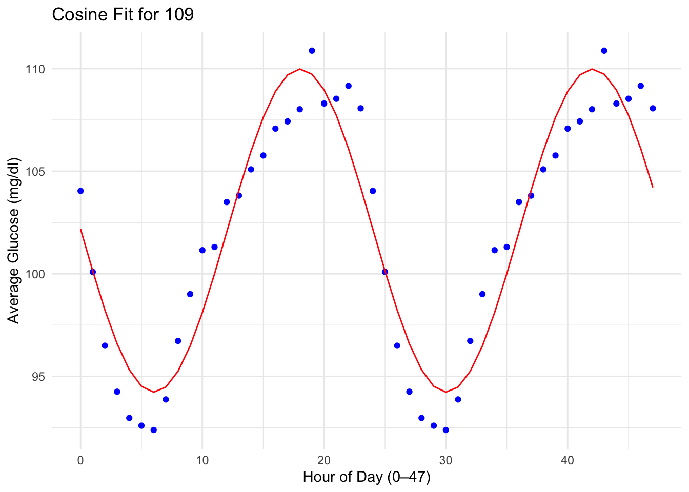
fit_data_112 <- double_avg %>% filter(ID == "112")
cos_fit_112 <- nls(
Avg_Glucose ~ A * cos(2 * pi / 24 * Hour_Rounded + phi) + C,
data = fit_data_112,
start = list(A = 10, phi = 0, C = 100)
)
fit_data_112 <- fit_data_112 %>%
mutate(Fitted = predict(cos_fit_112))
ggplot(fit_data_112, aes(x = Hour_Rounded)) +
geom_point(aes(y = Avg_Glucose), color = "blue") +
geom_line(aes(y = Fitted), color = "red") +
labs(
title = "Cosine Fit for 112",
x = "Hour of Day (0–47)",
y = "Average Glucose (mg/dl)"
) +
theme_minimal()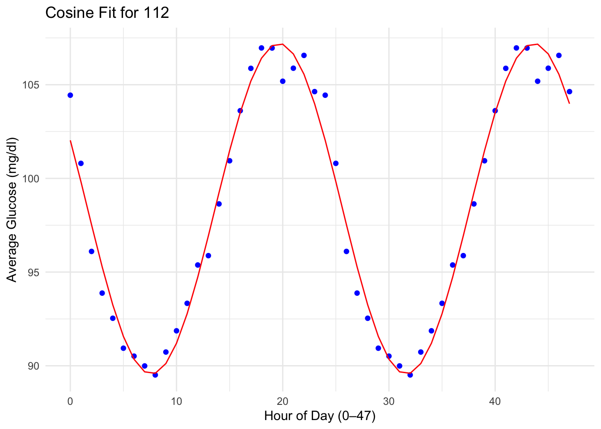
# Maximum bestimmen
max_row <- fit_data_102 %>% filter(Fitted == max(Fitted))
cat("Maximum:\n")Maximum:print(max_row %>% select(Hour_Rounded, Fitted))# A tibble: 2 × 2
Hour_Rounded Fitted
<dbl> <dbl>
1 17 106.
2 41 106.# Minimum bestimmen
min_row <- fit_data_102 %>% filter(Fitted == min(Fitted))
cat("\nMinimum:\n")
Minimum:print(min_row %>% select(Hour_Rounded, Fitted))# A tibble: 2 × 2
Hour_Rounded Fitted
<dbl> <dbl>
1 5 93.5
2 29 93.5Description: load cosinor package
library(cosinor)Description: Test functioning of the package with vitamind data set
data("vitamind")
head(vitamind) X Y time
1 0 16.12091 11.439525
2 0 29.90624 5.807104
3 1 39.17572 1.045492
4 1 35.15403 4.082983
5 1 43.67065 10.606247
6 0 31.20360 5.126054 fit <- cosinor.lm(Y ~ time(time) + X + amp.acro(X), data = vitamind, period = 12)
summary(fit) Raw model coefficients:
estimate standard.error lower.CI upper.CI p.value
(Intercept) 29.6898 0.4654 28.7776 30.6020 0.0000
X 1.9019 0.8041 0.3258 3.4779 0.0180
rrr 0.9308 0.6357 -0.3151 2.1767 0.1431
sss 6.2010 0.6805 4.8673 7.5347 0.0000
X:rrr 5.5795 1.1386 3.3479 7.8111 0.0000
X:sss -1.3825 1.1364 -3.6097 0.8447 0.2237
***********************
Transformed coefficients:
estimate standard.error lower.CI upper.CI p.value
(Intercept) 29.6898 0.4654 28.7776 30.6020 0.000
[X = 1] 1.9019 0.8041 0.3258 3.4779 0.018
amp 6.2705 0.6799 4.9378 7.6031 0.000
[X = 1]:amp 8.0995 0.9095 6.3170 9.8820 0.000
acr 1.4218 0.1015 1.2229 1.6207 0.000
[X = 1]:acr 0.6372 0.1167 0.4084 0.8659 0.000test_cosinor(fit, "X", param = "amp")Global test:
Statistic:
[1] 2.59
P-value:
[1] 0.1072
Individual tests:
Statistic:
[1] 1.61
P-value:
[1] 0.1072
Estimate and confidence interval[1] "1.83 (-0.4 to 4.05)"summary(vitamind$Y) Min. 1st Qu. Median Mean 3rd Qu. Max.
13.27 25.59 29.79 30.09 34.85 51.30 summary(predict(fit)) Min. 1st Qu. Median Mean 3rd Qu. Max.
16.10 25.98 29.26 29.69 33.59 46.48 library(ggplot2)
ggplot_cosinor.lm(fit, x_str = "X")
Description: fit cosinor for Ecosleep 102
# create dataset for cosinor model for 102Ecosleep
glucose_fit_102_data <- cleaned_data_deduplicated %>%
filter(ID == "102") %>% # filter for 102
mutate(
datetime = dmy_hm(DeviceTimestamp), # if format TT-MM-JJJJ HH:MM
dec.time = hour(datetime) + minute(datetime) / 60 # time as decimal hour during the day
)
# cosinor model
glucose_fit_102 <- cosinor.lm(`Glucose (mg/dl)` ~ time(dec.time), data = glucose_fit_102_data, period = 24)
summary(glucose_fit_102) Raw model coefficients:
estimate standard.error lower.CI upper.CI p.value
(Intercept) 99.7942 0.0503 99.6956 99.8928 0
rrr -1.6710 0.0711 -1.8103 -1.5318 0
sss -6.1713 0.0712 -6.3108 -6.0317 0
***********************
Transformed coefficients:
estimate standard.error lower.CI upper.CI p.value
(Intercept) 99.7942 0.0503 99.6956 99.8928 0
amp 6.3935 0.0712 6.2540 6.5330 0
acr 1.3064 0.0111 1.2846 1.3282 0# raw values
summary(glucose_fit_102_data$`Glucose (mg/dl)`) Min. 1st Qu. Median Mean 3rd Qu. Max.
40.00 91.00 99.00 99.79 108.00 196.00 # adjusted values
summary(predict(glucose_fit_102)) Min. 1st Qu. Median Mean 3rd Qu. Max.
37.44 91.57 99.66 99.79 107.85 189.93 # plot the fit
ggplot_cosinor.lm(glucose_fit_102)
Description: fit cosinor for Ecosleep 104
# create dataset for cosinor model for 102Ecosleep
glucose_fit_104_data <- cleaned_data_deduplicated %>%
filter(ID == "104") %>% # filter for 104
mutate(
datetime = dmy_hm(DeviceTimestamp), # if format TT-MM-JJJJ HH:MM
dec.time = hour(datetime) + minute(datetime) / 60 # time as decimal hour during the day
)
# cosinor model
glucose_fit_104 <- cosinor.lm(`Glucose (mg/dl)` ~ time(dec.time), data = glucose_fit_104_data, period = 24)
summary(glucose_fit_102) Raw model coefficients:
estimate standard.error lower.CI upper.CI p.value
(Intercept) 99.7942 0.0503 99.6956 99.8928 0
rrr -1.6710 0.0711 -1.8103 -1.5318 0
sss -6.1713 0.0712 -6.3108 -6.0317 0
***********************
Transformed coefficients:
estimate standard.error lower.CI upper.CI p.value
(Intercept) 99.7942 0.0503 99.6956 99.8928 0
amp 6.3935 0.0712 6.2540 6.5330 0
acr 1.3064 0.0111 1.2846 1.3282 0# raw values
summary(glucose_fit_104_data$`Glucose (mg/dl)`) Min. 1st Qu. Median Mean 3rd Qu. Max.
40 92 99 100 108 223 # adjusted values
summary(predict(glucose_fit_104)) Min. 1st Qu. Median Mean 3rd Qu. Max.
36.50 91.53 99.61 100.01 107.78 219.58 # plot the fit
ggplot_cosinor.lm(glucose_fit_104)
Description: fit cosinor for Ecosleep 107
# create dataset for cosinor model for 107Ecosleep
glucose_fit_107_data <- cleaned_data_deduplicated %>%
filter(ID == "107") %>% # filter for 107
mutate(
datetime = dmy_hm(DeviceTimestamp), # if format TT-MM-JJJJ HH:MM
dec.time = hour(datetime) + minute(datetime) / 60 # time as decimal hour during the day
)
# cosinor model
glucose_fit_107 <- cosinor.lm(`Glucose (mg/dl)` ~ time(dec.time), data = glucose_fit_107_data, period = 24)
summary(glucose_fit_107) Raw model coefficients:
estimate standard.error lower.CI upper.CI p.value
(Intercept) 99.8672 0.0702 99.7297 100.0047 0
rrr 3.1165 0.0992 2.9221 3.3108 0
sss -5.2599 0.0993 -5.4545 -5.0653 0
***********************
Transformed coefficients:
estimate standard.error lower.CI upper.CI p.value
(Intercept) 99.8672 0.0702 99.7297 100.0047 0
amp 6.1138 0.0993 5.9192 6.3085 0
acr -1.0359 0.0162 -1.0677 -1.0041 0# raw values
summary(glucose_fit_107_data$`Glucose (mg/dl)`) Min. 1st Qu. Median Mean 3rd Qu. Max.
40.00 89.00 98.00 99.87 109.00 197.00 # adjusted values
summary(predict(glucose_fit_107)) Min. 1st Qu. Median Mean 3rd Qu. Max.
34.14 89.62 98.86 99.87 108.84 190.93 # plot the fit
ggplot_cosinor.lm(glucose_fit_107)
Description: fit cosinor for Ecosleep 108
# create dataset for cosinor model for 107Ecosleep
glucose_fit_108_data <- cleaned_data_deduplicated %>%
filter(ID == "108") %>% # filter for 107
mutate(
datetime = dmy_hm(DeviceTimestamp), # if format TT-MM-JJJJ HH:MM
dec.time = hour(datetime) + minute(datetime) / 60 # time as decimal hour during the day
)
# cosinor model
glucose_fit_108 <- cosinor.lm(`Glucose (mg/dl)` ~ time(dec.time), data = glucose_fit_108_data, period = 24)
summary(glucose_fit_108) Raw model coefficients:
estimate standard.error lower.CI upper.CI p.value
(Intercept) 105.5868 0.1440 105.3046 105.8690 0
rrr -2.9873 0.2036 -3.3864 -2.5881 0
sss -12.0471 0.2036 -12.4461 -11.6481 0
***********************
Transformed coefficients:
estimate standard.error lower.CI upper.CI p.value
(Intercept) 105.5868 0.1440 105.3046 105.8690 0
amp 12.4119 0.2034 12.0133 12.8105 0
acr 1.3277 0.0164 1.2955 1.3599 0# raw values
summary(glucose_fit_108_data$`Glucose (mg/dl)`) Min. 1st Qu. Median Mean 3rd Qu. Max.
52.0 95.0 104.0 105.6 116.0 193.0 # adjusted values
summary(predict(glucose_fit_108)) Min. 1st Qu. Median Mean 3rd Qu. Max.
44.42 96.94 105.39 105.59 113.24 185.47 # plot the fit
ggplot_cosinor.lm(glucose_fit_108)
Description: fit cosinor for Ecosleep 109
# create dataset for cosinor model for 107Ecosleep
glucose_fit_109_data <- cleaned_data_deduplicated %>%
filter(ID == "109") %>% # filter for 109
mutate(
datetime = dmy_hm(DeviceTimestamp), # if format TT-MM-JJJJ HH:MM
dec.time = hour(datetime) + minute(datetime) / 60 # time as decimal hour during the day
)
# cosinor model
glucose_fit_109 <- cosinor.lm(`Glucose (mg/dl)` ~ time(dec.time), data = glucose_fit_109_data, period = 24)
summary(glucose_fit_109) Raw model coefficients:
estimate standard.error lower.CI upper.CI p.value
(Intercept) 102.1091 0.0606 101.9904 102.2278 0
rrr 1.0739 0.0857 0.9060 1.2418 0
sss -7.8340 0.0856 -8.0019 -7.6661 0
***********************
Transformed coefficients:
estimate standard.error lower.CI upper.CI p.value
(Intercept) 102.1091 0.0606 101.9904 102.2278 0
amp 7.9073 0.0856 7.7394 8.0751 0
acr -1.4346 0.0108 -1.4558 -1.4133 0# raw values
summary(glucose_fit_109_data$`Glucose (mg/dl)`) Min. 1st Qu. Median Mean 3rd Qu. Max.
40.0 93.0 100.0 102.1 110.0 179.0 # adjusted values
summary(predict(glucose_fit_109)) Min. 1st Qu. Median Mean 3rd Qu. Max.
38.99 93.70 101.06 102.11 109.15 184.09 # plot the fit
ggplot_cosinor.lm(glucose_fit_109)
Description: fit cosinor for Ecosleep 112
# create dataset for cosinor model for 112Ecosleep
glucose_fit_112_data <- cleaned_data_deduplicated %>%
filter(ID == "112") %>% # filter for 112
mutate(
datetime = dmy_hm(DeviceTimestamp), # if format TT-MM-JJJJ HH:MM
dec.time = hour(datetime) + minute(datetime) / 60 # time as decimal hour during the day
)
# cosinor model
glucose_fit_112 <- cosinor.lm(`Glucose (mg/dl)` ~ time(dec.time), data = glucose_fit_112_data, period = 24)
summary(glucose_fit_112) Raw model coefficients:
estimate standard.error lower.CI upper.CI p.value
(Intercept) 98.3816 0.0785 98.2277 98.5355 0
rrr 4.6835 0.1110 4.4660 4.9010 0
sss -7.5482 0.1111 -7.7660 -7.3305 0
***********************
Transformed coefficients:
estimate standard.error lower.CI upper.CI p.value
(Intercept) 98.3816 0.0785 98.2277 98.5355 0
amp 8.8832 0.1113 8.6651 9.1013 0
acr -1.0155 0.0125 -1.0399 -0.9910 0# raw values
summary(glucose_fit_112_data$`Glucose (mg/dl)`) Min. 1st Qu. Median Mean 3rd Qu. Max.
40.00 87.00 96.00 98.38 107.00 213.00 # adjusted values
summary(predict(glucose_fit_112)) Min. 1st Qu. Median Mean 3rd Qu. Max.
43.89 89.16 96.57 98.38 105.91 218.02 # plot the fit
ggplot_cosinor.lm(glucose_fit_112)
Description: Fit for 102
cos_fit_102_orig <- nls(
`Glucose (mg/dl)` ~ A * cos(2 * pi / 24 * dec.time + phi) + C,
data = glucose_fit_102_data,
start = list(A = 10, phi = 0, C = 100) # start values
)
# Ergebnis anzeigen
summary(cos_fit_102_orig)
Formula: `Glucose (mg/dl)` ~ A * cos(2 * pi/24 * dec.time + phi) + C
Parameters:
Estimate Std. Error t value Pr(>|t|)
A 6.39349 0.07116 89.84 <2e-16 ***
phi -4.44795 0.01112 -399.88 <2e-16 ***
C 99.79418 0.05030 1983.89 <2e-16 ***
---
Signif. codes: 0 '***' 0.001 '**' 0.01 '*' 0.05 '.' 0.1 ' ' 1
Residual standard error: 13.98 on 77228 degrees of freedom
Number of iterations to convergence: 10
Achieved convergence tolerance: 1.922e-07# prepare dataset for plotting
glucose_fit_102_data <- glucose_fit_102_data %>%
mutate(Fitted = predict(cos_fit_102_orig))
ggplot(glucose_fit_102_data, aes(x = dec.time, y = `Glucose (mg/dl)`)) +
geom_point(alpha = 0.3, color = "grey") + # Original glucose values
geom_line(aes(y = Fitted), color = "blue", size = 1) + # Cosinus fit
labs(title = "Manual Cosinus-Fit for 102 with original data",
x = "time (decimal hours)",
y = "Glucose (mg/dl)") +
theme_minimal()
Desciption: Fit for 104
cos_fit_104_orig <- nls(
`Glucose (mg/dl)` ~ A * cos(2 * pi / 24 * dec.time + phi) + C,
data = glucose_fit_104_data,
start = list(A = 10, phi = 0, C = 100) # start values
)
# Ergebnis anzeigen
summary(cos_fit_104_orig)
Formula: `Glucose (mg/dl)` ~ A * cos(2 * pi/24 * dec.time + phi) + C
Parameters:
Estimate Std. Error t value Pr(>|t|)
A 3.50090 0.06912 50.65 <2e-16 ***
phi 1.29380 0.01973 65.56 <2e-16 ***
C 100.01206 0.04886 2046.78 <2e-16 ***
---
Signif. codes: 0 '***' 0.001 '**' 0.01 '*' 0.05 '.' 0.1 ' ' 1
Residual standard error: 14.79 on 91590 degrees of freedom
Number of iterations to convergence: 7
Achieved convergence tolerance: 1.57e-09# prepare dataset for plotting
glucose_fit_104_data <- glucose_fit_104_data %>%
mutate(Fitted = predict(cos_fit_104_orig))
ggplot(glucose_fit_104_data, aes(x = dec.time, y = `Glucose (mg/dl)`)) +
geom_point(alpha = 0.3, color = "grey") + # Original glucose values
geom_line(aes(y = Fitted), color = "blue", size = 1) + # Cosinus fit
labs(title = "Manual Cosinus-Fit for 104 with original data",
x = "time (decimal hours)",
y = "Glucose (mg/dl)") +
theme_minimal()
Desciption: Fit for 107
cos_fit_107_orig <- nls(
`Glucose (mg/dl)` ~ A * cos(2 * pi / 24 * dec.time + phi) + C,
data = glucose_fit_107_data,
start = list(A = 10, phi = 0, C = 100) # start values
)
# Ergebnis anzeigen
summary(cos_fit_107_orig)
Formula: `Glucose (mg/dl)` ~ A * cos(2 * pi/24 * dec.time + phi) + C
Parameters:
Estimate Std. Error t value Pr(>|t|)
A 6.11375 0.09932 61.56 <2e-16 ***
phi 1.03591 0.01622 63.88 <2e-16 ***
C 99.86721 0.07017 1423.26 <2e-16 ***
---
Signif. codes: 0 '***' 0.001 '**' 0.01 '*' 0.05 '.' 0.1 ' ' 1
Residual standard error: 16.62 on 56107 degrees of freedom
Number of iterations to convergence: 5
Achieved convergence tolerance: 3.927e-06# prepare dataset for plotting
glucose_fit_107_data <- glucose_fit_107_data %>%
mutate(Fitted = predict(cos_fit_107_orig))
ggplot(glucose_fit_107_data, aes(x = dec.time, y = `Glucose (mg/dl)`)) +
geom_point(alpha = 0.3, color = "grey") + # Original glucose values
geom_line(aes(y = Fitted), color = "blue", size = 1) + # Cosinus fit
labs(title = "Manual Cosinus-Fit for 107 with original data",
x = "time (decimal hours)",
y = "Glucose (mg/dl)") +
theme_minimal()
Description: Fit for 108
cos_fit_108_orig <- nls(
`Glucose (mg/dl)` ~ A * cos(2 * pi / 24 * dec.time + phi) + C,
data = glucose_fit_108_data,
start = list(A = 10, phi = 0, C = 100) # start values
)
# Ergebnis anzeigen
summary(cos_fit_108_orig)
Formula: `Glucose (mg/dl)` ~ A * cos(2 * pi/24 * dec.time + phi) + C
Parameters:
Estimate Std. Error t value Pr(>|t|)
A 12.41194 0.20337 61.03 <2e-16 ***
phi 20.66341 0.01642 1258.09 <2e-16 ***
C 105.58679 0.14398 733.36 <2e-16 ***
---
Signif. codes: 0 '***' 0.001 '**' 0.01 '*' 0.05 '.' 0.1 ' ' 1
Residual standard error: 15.79 on 12032 degrees of freedom
Number of iterations to convergence: 11
Achieved convergence tolerance: 2.572e-07# prepare dataset for plotting
glucose_fit_108_data <- glucose_fit_108_data %>%
mutate(Fitted = predict(cos_fit_108_orig))
ggplot(glucose_fit_108_data, aes(x = dec.time, y = `Glucose (mg/dl)`)) +
geom_point(alpha = 0.3, color = "grey") + # Original glucose values
geom_line(aes(y = Fitted), color = "blue", size = 1) + # Cosinus fit
labs(title = "Manual Cosinus-Fit for 108 with original data",
x = "time (decimal hours)",
y = "Glucose (mg/dl)") +
theme_minimal()
Description: Fit for 109
cos_fit_109_orig <- nls(
`Glucose (mg/dl)` ~ A * cos(2 * pi / 24 * dec.time + phi) + C,
data = glucose_fit_109_data,
start = list(A = 10, phi = 0, C = 100) # start values
)
# Ergebnis anzeigen
summary(cos_fit_109_orig)
Formula: `Glucose (mg/dl)` ~ A * cos(2 * pi/24 * dec.time + phi) + C
Parameters:
Estimate Std. Error t value Pr(>|t|)
A 7.90726 0.08563 92.35 <2e-16 ***
phi 1.43456 0.01083 132.41 <2e-16 ***
C 102.10915 0.06056 1686.00 <2e-16 ***
---
Signif. codes: 0 '***' 0.001 '**' 0.01 '*' 0.05 '.' 0.1 ' ' 1
Residual standard error: 12.87 on 45167 degrees of freedom
Number of iterations to convergence: 7
Achieved convergence tolerance: 2.21e-09# prepare dataset for plotting
glucose_fit_109_data <- glucose_fit_109_data %>%
mutate(Fitted = predict(cos_fit_109_orig))
ggplot(glucose_fit_109_data, aes(x = dec.time, y = `Glucose (mg/dl)`)) +
geom_point(alpha = 0.3, color = "grey") + # Original glucose values
geom_line(aes(y = Fitted), color = "blue", size = 1) + # Cosinus fit
labs(title = "Manual Cosinus-Fit for 109 with original data",
x = "time (decimal hours)",
y = "Glucose (mg/dl)") +
theme_minimal()
Description: Fit for 112
cos_fit_112_orig <- nls(
`Glucose (mg/dl)` ~ A * cos(2 * pi / 24 * dec.time + phi) + C,
data = glucose_fit_112_data,
start = list(A = 10, phi = 0, C = 100) # start values
)
# Ergebnis anzeigen
summary(cos_fit_112_orig)
Formula: `Glucose (mg/dl)` ~ A * cos(2 * pi/24 * dec.time + phi) + C
Parameters:
Estimate Std. Error t value Pr(>|t|)
A 8.88320 0.11129 79.82 <2e-16 ***
phi 1.01546 0.01247 81.45 <2e-16 ***
C 98.38159 0.07850 1253.20 <2e-16 ***
---
Signif. codes: 0 '***' 0.001 '**' 0.01 '*' 0.05 '.' 0.1 ' ' 1
Residual standard error: 15.77 on 40345 degrees of freedom
Number of iterations to convergence: 5
Achieved convergence tolerance: 7.447e-09# prepare dataset for plotting
glucose_fit_112_data <- glucose_fit_112_data %>%
mutate(Fitted = predict(cos_fit_112_orig))
ggplot(glucose_fit_112_data, aes(x = dec.time, y = `Glucose (mg/dl)`)) +
geom_point(alpha = 0.3, color = "grey") + # Original glucose values
geom_line(aes(y = Fitted), color = "blue", size = 1) + # Cosinus fit
labs(title = "Manual Cosinus-Fit for 112 with original data",
x = "time (decimal hours)",
y = "Glucose (mg/dl)") +
theme_minimal()
summary(cos_fit_102)
Formula: Avg_Glucose ~ A * cos(2 * pi/24 * Hour_Rounded + phi) + C
Parameters:
Estimate Std. Error t value Pr(>|t|)
A -6.37619 0.30189 -21.12 <2e-16 ***
phi -1.17838 0.04735 -24.89 <2e-16 ***
C 99.79182 0.21347 467.47 <2e-16 ***
---
Signif. codes: 0 '***' 0.001 '**' 0.01 '*' 0.05 '.' 0.1 ' ' 1
Residual standard error: 1.479 on 45 degrees of freedom
Number of iterations to convergence: 8
Achieved convergence tolerance: 7.629e-06summary(glucose_fit_102)Raw model coefficients:
estimate standard.error lower.CI upper.CI p.value
(Intercept) 99.7942 0.0503 99.6956 99.8928 0
rrr -1.6710 0.0711 -1.8103 -1.5318 0
sss -6.1713 0.0712 -6.3108 -6.0317 0
***********************
Transformed coefficients:
estimate standard.error lower.CI upper.CI p.value
(Intercept) 99.7942 0.0503 99.6956 99.8928 0
amp 6.3935 0.0712 6.2540 6.5330 0
acr 1.3064 0.0111 1.2846 1.3282 0summary(cos_fit_102_orig)
Formula: `Glucose (mg/dl)` ~ A * cos(2 * pi/24 * dec.time + phi) + C
Parameters:
Estimate Std. Error t value Pr(>|t|)
A 6.39349 0.07116 89.84 <2e-16 ***
phi -4.44795 0.01112 -399.88 <2e-16 ***
C 99.79418 0.05030 1983.89 <2e-16 ***
---
Signif. codes: 0 '***' 0.001 '**' 0.01 '*' 0.05 '.' 0.1 ' ' 1
Residual standard error: 13.98 on 77228 degrees of freedom
Number of iterations to convergence: 10
Achieved convergence tolerance: 1.922e-07summary(cos_fit_104)
Formula: Avg_Glucose ~ A * cos(2 * pi/24 * Hour_Rounded + phi) + C
Parameters:
Estimate Std. Error t value Pr(>|t|)
A 3.48348 0.34795 10.01 5.02e-13 ***
phi 1.41791 0.09989 14.20 < 2e-16 ***
C 100.01349 0.24604 406.49 < 2e-16 ***
---
Signif. codes: 0 '***' 0.001 '**' 0.01 '*' 0.05 '.' 0.1 ' ' 1
Residual standard error: 1.705 on 45 degrees of freedom
Number of iterations to convergence: 7
Achieved convergence tolerance: 4.319e-07summary(glucose_fit_104)Raw model coefficients:
estimate standard.error lower.CI upper.CI p.value
(Intercept) 100.0121 0.0489 99.9163 100.1078 0
rrr 0.9574 0.0691 0.8220 1.0928 0
sss -3.3675 0.0691 -3.5029 -3.2320 0
***********************
Transformed coefficients:
estimate standard.error lower.CI upper.CI p.value
(Intercept) 100.0121 0.0489 99.9163 100.1078 0
amp 3.5009 0.0691 3.3654 3.6364 0
acr -1.2938 0.0197 -1.3325 -1.2551 0summary(cos_fit_104_orig)
Formula: `Glucose (mg/dl)` ~ A * cos(2 * pi/24 * dec.time + phi) + C
Parameters:
Estimate Std. Error t value Pr(>|t|)
A 3.50090 0.06912 50.65 <2e-16 ***
phi 1.29380 0.01973 65.56 <2e-16 ***
C 100.01206 0.04886 2046.78 <2e-16 ***
---
Signif. codes: 0 '***' 0.001 '**' 0.01 '*' 0.05 '.' 0.1 ' ' 1
Residual standard error: 14.79 on 91590 degrees of freedom
Number of iterations to convergence: 7
Achieved convergence tolerance: 1.57e-09summary(cos_fit_107)
Formula: Avg_Glucose ~ A * cos(2 * pi/24 * Hour_Rounded + phi) + C
Parameters:
Estimate Std. Error t value Pr(>|t|)
A 6.1279 0.9707 6.313 1.07e-07 ***
phi 1.1679 0.1584 7.373 2.86e-09 ***
C 99.8717 0.6864 145.504 < 2e-16 ***
---
Signif. codes: 0 '***' 0.001 '**' 0.01 '*' 0.05 '.' 0.1 ' ' 1
Residual standard error: 4.755 on 45 degrees of freedom
Number of iterations to convergence: 5
Achieved convergence tolerance: 1.371e-06summary(glucose_fit_107)Raw model coefficients:
estimate standard.error lower.CI upper.CI p.value
(Intercept) 99.8672 0.0702 99.7297 100.0047 0
rrr 3.1165 0.0992 2.9221 3.3108 0
sss -5.2599 0.0993 -5.4545 -5.0653 0
***********************
Transformed coefficients:
estimate standard.error lower.CI upper.CI p.value
(Intercept) 99.8672 0.0702 99.7297 100.0047 0
amp 6.1138 0.0993 5.9192 6.3085 0
acr -1.0359 0.0162 -1.0677 -1.0041 0summary(cos_fit_107_orig)
Formula: `Glucose (mg/dl)` ~ A * cos(2 * pi/24 * dec.time + phi) + C
Parameters:
Estimate Std. Error t value Pr(>|t|)
A 6.11375 0.09932 61.56 <2e-16 ***
phi 1.03591 0.01622 63.88 <2e-16 ***
C 99.86721 0.07017 1423.26 <2e-16 ***
---
Signif. codes: 0 '***' 0.001 '**' 0.01 '*' 0.05 '.' 0.1 ' ' 1
Residual standard error: 16.62 on 56107 degrees of freedom
Number of iterations to convergence: 5
Achieved convergence tolerance: 3.927e-06summary(cos_fit_108)
Formula: Avg_Glucose ~ A * cos(2 * pi/24 * Hour_Rounded + phi) + C
Parameters:
Estimate Std. Error t value Pr(>|t|)
A -12.35366 0.72300 -17.09 <2e-16 ***
phi 5.08807 0.05853 86.94 <2e-16 ***
C 105.60168 0.51124 206.56 <2e-16 ***
---
Signif. codes: 0 '***' 0.001 '**' 0.01 '*' 0.05 '.' 0.1 ' ' 1
Residual standard error: 3.542 on 45 degrees of freedom
Number of iterations to convergence: 8
Achieved convergence tolerance: 4.402e-06summary(glucose_fit_108)Raw model coefficients:
estimate standard.error lower.CI upper.CI p.value
(Intercept) 105.5868 0.1440 105.3046 105.8690 0
rrr -2.9873 0.2036 -3.3864 -2.5881 0
sss -12.0471 0.2036 -12.4461 -11.6481 0
***********************
Transformed coefficients:
estimate standard.error lower.CI upper.CI p.value
(Intercept) 105.5868 0.1440 105.3046 105.8690 0
amp 12.4119 0.2034 12.0133 12.8105 0
acr 1.3277 0.0164 1.2955 1.3599 0summary(cos_fit_108_orig)
Formula: `Glucose (mg/dl)` ~ A * cos(2 * pi/24 * dec.time + phi) + C
Parameters:
Estimate Std. Error t value Pr(>|t|)
A 12.41194 0.20337 61.03 <2e-16 ***
phi 20.66341 0.01642 1258.09 <2e-16 ***
C 105.58679 0.14398 733.36 <2e-16 ***
---
Signif. codes: 0 '***' 0.001 '**' 0.01 '*' 0.05 '.' 0.1 ' ' 1
Residual standard error: 15.79 on 12032 degrees of freedom
Number of iterations to convergence: 11
Achieved convergence tolerance: 2.572e-07summary(cos_fit_109)
Formula: Avg_Glucose ~ A * cos(2 * pi/24 * Hour_Rounded + phi) + C
Parameters:
Estimate Std. Error t value Pr(>|t|)
A 7.87606 0.40760 19.32 <2e-16 ***
phi 76.95992 0.05175 1487.11 <2e-16 ***
C 102.10521 0.28821 354.27 <2e-16 ***
---
Signif. codes: 0 '***' 0.001 '**' 0.01 '*' 0.05 '.' 0.1 ' ' 1
Residual standard error: 1.997 on 45 degrees of freedom
Number of iterations to convergence: 6
Achieved convergence tolerance: 1.956e-06summary(glucose_fit_109)Raw model coefficients:
estimate standard.error lower.CI upper.CI p.value
(Intercept) 102.1091 0.0606 101.9904 102.2278 0
rrr 1.0739 0.0857 0.9060 1.2418 0
sss -7.8340 0.0856 -8.0019 -7.6661 0
***********************
Transformed coefficients:
estimate standard.error lower.CI upper.CI p.value
(Intercept) 102.1091 0.0606 101.9904 102.2278 0
amp 7.9073 0.0856 7.7394 8.0751 0
acr -1.4346 0.0108 -1.4558 -1.4133 0summary(cos_fit_109_orig)
Formula: `Glucose (mg/dl)` ~ A * cos(2 * pi/24 * dec.time + phi) + C
Parameters:
Estimate Std. Error t value Pr(>|t|)
A 7.90726 0.08563 92.35 <2e-16 ***
phi 1.43456 0.01083 132.41 <2e-16 ***
C 102.10915 0.06056 1686.00 <2e-16 ***
---
Signif. codes: 0 '***' 0.001 '**' 0.01 '*' 0.05 '.' 0.1 ' ' 1
Residual standard error: 12.87 on 45167 degrees of freedom
Number of iterations to convergence: 7
Achieved convergence tolerance: 2.21e-09summary(cos_fit_112)
Formula: Avg_Glucose ~ A * cos(2 * pi/24 * Hour_Rounded + phi) + C
Parameters:
Estimate Std. Error t value Pr(>|t|)
A 8.82463 0.20097 43.91 <2e-16 ***
phi 1.14426 0.02277 50.24 <2e-16 ***
C 98.38137 0.14211 692.31 <2e-16 ***
---
Signif. codes: 0 '***' 0.001 '**' 0.01 '*' 0.05 '.' 0.1 ' ' 1
Residual standard error: 0.9845 on 45 degrees of freedom
Number of iterations to convergence: 5
Achieved convergence tolerance: 5.418e-06summary(glucose_fit_112)Raw model coefficients:
estimate standard.error lower.CI upper.CI p.value
(Intercept) 98.3816 0.0785 98.2277 98.5355 0
rrr 4.6835 0.1110 4.4660 4.9010 0
sss -7.5482 0.1111 -7.7660 -7.3305 0
***********************
Transformed coefficients:
estimate standard.error lower.CI upper.CI p.value
(Intercept) 98.3816 0.0785 98.2277 98.5355 0
amp 8.8832 0.1113 8.6651 9.1013 0
acr -1.0155 0.0125 -1.0399 -0.9910 0summary(cos_fit_112_orig)
Formula: `Glucose (mg/dl)` ~ A * cos(2 * pi/24 * dec.time + phi) + C
Parameters:
Estimate Std. Error t value Pr(>|t|)
A 8.88320 0.11129 79.82 <2e-16 ***
phi 1.01546 0.01247 81.45 <2e-16 ***
C 98.38159 0.07850 1253.20 <2e-16 ***
---
Signif. codes: 0 '***' 0.001 '**' 0.01 '*' 0.05 '.' 0.1 ' ' 1
Residual standard error: 15.77 on 40345 degrees of freedom
Number of iterations to convergence: 5
Achieved convergence tolerance: 7.447e-09Description: Cos for 102: Moving window for 102
# Storage for results
moving_window_102 <- data.frame(
Window_Start = as.POSIXct(character()),
Amp = numeric(),
Acrophase_Rad = numeric(),
Acrophase_Raw = numeric(),
Acrophase_Raw_Hours = numeric(),
Max_Time_Hours = numeric(),
Min_Time_Hours = numeric(),
Intercept = numeric(),
stringsAsFactors = FALSE
)
# Time boundaries
start_time_mv_102 <- min(glucose_fit_102_data$datetime)
end_time_mv_102 <- max(glucose_fit_102_data$datetime)
# Window setup
window_length <- days(3)
step_size <- days(1)
current_start_102 <- start_time_mv_102
while (current_start_102 + window_length <= end_time_mv_102) {
current_end_102 <- current_start_102 + window_length
# Filter window
window_data_102 <- glucose_fit_102_data %>%
filter(datetime >= current_start_102 & datetime < current_end_102)
# Skip small windows
if (nrow(window_data_102) < 100) {
current_start_102 <- current_start_102 + step_size
next
}
# Try fitting model
fit_102 <- tryCatch({
cosinor.lm(`Glucose (mg/dl)` ~ time(dec.time), data = window_data_102, period = 24)
}, error = function(e) NA)
# Proceed only if fit succeeded
if (inherits(fit_102, "cosinor.lm")) {
coefs_102 <- coef(fit_102, transformed = TRUE)
# Safe extraction
if (is.matrix(coefs_102)) {
amp_102 <- coefs_102["amp", "estimate"]
acr_102 <- coefs_102["acr", "estimate"]
intercept_102 <- coefs_102["(Intercept)", "estimate"]
} else if (is.vector(coefs_102)) {
amp_102 <- coefs_102["amp"]
acr_102 <- coefs_102["acr"]
intercept_102 <- coefs_102["(Intercept)"]
} else {
current_start_102 <- current_start_102 + step_size
next
}
# Raw acrophase in hours
acrophase_raw_102 <- (acr_102 * 24) / (2 * pi)
# Calculate max time (adjusted by 12h if amplitude is negative)
max_time_102 <- ((acrophase_raw_102 + ifelse(amp_102 < 0, 12, 0)) + 24) %% 24
min_time_102 <- (max_time_102 + 12) %% 24
# Store results
moving_window_102 <- rbind(moving_window_102, data.frame(
Window_Start = current_start_102,
Amp = amp_102,
Acrophase_Rad = acr_102,
Acrophase_Raw = acrophase_raw_102,
Acrophase_Raw_Hours = (acrophase_raw_102 + 24) %% 24,
Max_Time_Hours = max_time_102,
Min_Time_Hours = min_time_102,
Intercept = intercept_102
))
}
# Move to next window
current_start_102 <- current_start_102 + step_size
}Description: Cos for 102: Plot
ggplot(moving_window_102, aes(x = Window_Start)) +
geom_line(aes(y = Max_Time_Hours, color = "Maximum")) +
geom_line(aes(y = Min_Time_Hours, color = "Minimum")) +
geom_point(aes(y = Max_Time_Hours, color = "Maximum")) +
geom_point(aes(y = Min_Time_Hours, color = "Minimum")) +
scale_color_manual(values = c("Maximum" = "red", "Minimum" = "blue")) +
scale_y_continuous(breaks = seq(0, 24, 2), limits = c(0, 24)) +
labs(
title = "Diurnal Pattern of Maximum and Minimum (Glucose Cosinor)",
x = "Window Start Time",
y = "Time of Day (Hours)",
color = "Time Point"
) +
theme_minimal()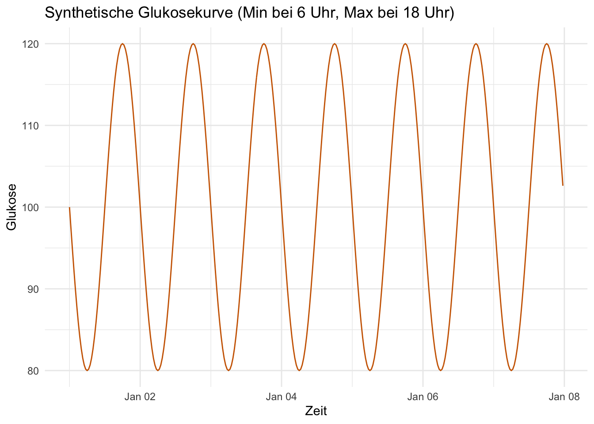
Description: Moving Window Cos for 102: min. 400 datapoints are needed to calculate the cos + using package cosinor.lm()
# Empty dataframe to store results
moving_window_102 <- data.frame(
Window_Start = as.POSIXct(character()),
Amp = numeric(),
Acrophase_Rad = numeric(),
Acrophase_Raw = numeric(),
Acrophase_Raw_Hours = numeric(),
Max_Time_Hours = numeric(),
Min_Time_Hours = numeric(),
Intercept = numeric(),
stringsAsFactors = FALSE
)
# Define time boundaries
start_time_mv_102 <- min(glucose_fit_102_data$datetime)
end_time_mv_102 <- max(glucose_fit_102_data$datetime)
# Window and step sizes
window_length <- days(3)
step_size <- days(1)
current_start_102 <- start_time_mv_102
# Sliding window analysis
while (current_start_102 + window_length <= end_time_mv_102) {
current_end_102 <- current_start_102 + window_length
# Filter data within window
window_data_102 <- glucose_fit_102_data %>%
filter(datetime >= current_start_102 & datetime < current_end_102)
# Skip windows with too few data points
if (nrow(window_data_102) < 400) {
current_start_102 <- current_start_102 + step_size
next
}
# Fit cosinor model
fit_102 <- tryCatch({
cosinor.lm(`Glucose (mg/dl)` ~ time(dec.time), data = window_data_102, period = 24)
}, error = function(e) NA)
if (inherits(fit_102, "cosinor.lm")) {
coefs_102 <- coef(fit_102, transformed = TRUE)
# Extract coefficients
if (is.matrix(coefs_102)) {
amp_102 <- coefs_102["amp", "estimate"]
acr_102 <- coefs_102["acr", "estimate"]
intercept_102 <- coefs_102["(Intercept)", "estimate"]
} else if (is.vector(coefs_102)) {
amp_102 <- coefs_102["amp"]
acr_102 <- coefs_102["acr"]
intercept_102 <- coefs_102["(Intercept)"]
} else {
current_start_102 <- current_start_102 + step_size
next
}
# Raw acrophase in hours
acrophase_raw_102 <- (acr_102 * 24) / (2 * pi)
acrophase_norm_102 <- (acrophase_raw_102 + 24) %% 24
# Max and min time depending on amplitude sign
if (amp_102 >= 0) {
max_time_102 <- acrophase_norm_102
min_time_102 <- (acrophase_norm_102 + 12) %% 24
} else {
min_time_102 <- acrophase_norm_102
max_time_102 <- (acrophase_norm_102 + 12) %% 24
}
# Store results
moving_window_102 <- rbind(moving_window_102, data.frame(
Window_Start = current_start_102,
Amp = amp_102,
Acrophase_Rad = acr_102,
Acrophase_Raw = acrophase_raw_102,
Acrophase_Raw_Hours = acrophase_norm_102,
Max_Time_Hours = max_time_102,
Min_Time_Hours = min_time_102,
Intercept = intercept_102
))
}
# Move to next window
current_start_102 <- current_start_102 + step_size
}Description: Moving Window Cos for 102: Plot
ggplot(moving_window_102, aes(x = Window_Start)) +
geom_line(aes(y = Max_Time_Hours, color = "Maximum"), size = 0.5) +
geom_line(aes(y = Min_Time_Hours, color = "Minimum"), size = 0.5) +
geom_point(aes(y = Max_Time_Hours, color = "Maximum"), size = 1) +
geom_point(aes(y = Min_Time_Hours, color = "Minimum"), size = 1) +
scale_color_manual(
name = "Time Point",
values = c("Maximum" = "red", "Minimum" = "blue")
) +
scale_y_continuous(
breaks = seq(0, 24, 2),
limits = c(0, 24),
expand = c(0, 0)
) +
labs(
title = "Diurnal Timing of Maximum and Minimum (Glucose Cosinor)",
x = "Window Start Time",
y = "Time of Day (Hours)"
) +
theme_minimal(base_size = 12) +
theme(legend.position = "bottom")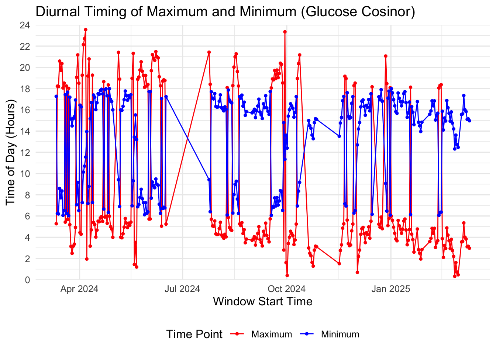
Description: Moving Window Cos for 102 with lm
# Empty Dataframe to store results
moving_window_102_l <- data.frame(
Window_Start = as.POSIXct(character()),
Amp = numeric(),
Acrophase_Rad = numeric(),
Acrophase_Raw = numeric(),
Acrophase_Raw_Hours = numeric(),
Max_Time_Hours = numeric(),
Min_Time_Hours = numeric(),
Intercept = numeric(),
stringsAsFactors = FALSE
)
# Defining time boundaries
start_time_mv_102 <- min(glucose_fit_102_data$datetime)
end_time_mv_102 <- max(glucose_fit_102_data$datetime)
# window and step sizes
window_length <- days(3)
step_size <- days(1)
current_start_102 <- start_time_mv_102
# Sliding window loop
while (current_start_102 + window_length <= end_time_mv_102) {
current_end_102 <- current_start_102 + window_length
# Filter Data within window
window_data_102_l <- glucose_fit_102_data %>%
filter(datetime >= current_start_102 & datetime < current_end_102)
# Skip windows with too few data points
if (nrow(window_data_102) < 400) {
current_start_102 <- current_start_102 + step_size
next
}
# calculate cosinus components
dec_time <- window_data_102_l$dec.time
window_data_102_l$cos_part <- cos(2 * pi * dec_time / 24)
window_data_102_l$sin_part <- sin(2 * pi * dec_time / 24)
# fit with linear regression
fit_test <- tryCatch({
lm(`Glucose (mg/dl)` ~ cos_part + sin_part, data = window_data_102_l)
}, error = function(e) NA)
# test
if (!inherits(fit_test, "lm")) {
current_start_102 <- current_start_102 + step_size
next
}
coefs <- coef(fit_test)
# skip if NA in relevant coefficents
if (any(is.na(coefs[c("(Intercept)", "cos_part", "sin_part")]))) {
current_start_102 <- current_start_102 + step_size
next
}
# extract coefficients
intercept_102_l <- coefs["(Intercept)"]
beta_102 <- coefs["cos_part"]
gamma_102 <- coefs["sin_part"]
# amolitude
amp_102_l <- sqrt(beta_102^2 + gamma_102^2)
# Acrophase (radiant)
acr_rad_102_l <- atan2(-gamma_102, beta_102) # Wichtig: Minuszeichen
# Acrophase (hours)
acrophase_raw_102_l <- (acr_rad_102_l * 24) / (2 * pi)
acrophase_norm_102_l <- (acrophase_raw_102_l + 24) %% 24
# max and min time
max_time_102_l <- acrophase_norm_102_l
min_time_102_l <- (acrophase_norm_102_l + 12) %% 24
# store results
moving_window_102_l <- rbind(moving_window_102_l, data.frame(
Window_Start = current_start_102,
Amp = amp_102_l,
Acrophase_Rad = acr_rad_102_l,
Acrophase_Raw = acrophase_raw_102_l,
Acrophase_Raw_Hours = acrophase_norm_102_l,
Max_Time_Hours = max_time_102_l,
Min_Time_Hours = min_time_102_l,
Intercept = intercept_102_l
))
# next window
current_start_102 <- current_start_102 + step_size
}Description: Moving Window Cos for 104
# Empty dataframe to store results
moving_window_104 <- data.frame(
Window_Start = as.POSIXct(character()),
Amp = numeric(),
Acrophase_Rad = numeric(),
Acrophase_Raw = numeric(),
Acrophase_Raw_Hours = numeric(),
Max_Time_Hours = numeric(),
Min_Time_Hours = numeric(),
Intercept = numeric(),
stringsAsFactors = FALSE
)
# Define time boundaries
start_time_mv_104 <- min(glucose_fit_104_data$datetime)
end_time_mv_104 <- max(glucose_fit_104_data$datetime)
# Window and step sizes
window_length <- days(3)
step_size <- days(1)
current_start_104 <- start_time_mv_104
# Sliding window analysis
while (current_start_104 + window_length <= end_time_mv_104) {
current_end_104 <- current_start_104 + window_length
# Filter data within window
window_data_104 <- glucose_fit_104_data %>%
filter(datetime >= current_start_104 & datetime < current_end_104)
# Skip windows with too few data points
if (nrow(window_data_104) < 400) {
current_start_104 <- current_start_104 + step_size
next
}
# Fit cosinor model
fit_104 <- tryCatch({
cosinor.lm(`Glucose (mg/dl)` ~ time(dec.time), data = window_data_104, period = 24)
}, error = function(e) NA)
if (inherits(fit_104, "cosinor.lm")) {
coefs_104 <- coef(fit_104, transformed = TRUE)
# Extract coefficients
if (is.matrix(coefs_104)) {
amp_104 <- coefs_104["amp", "estimate"]
acr_104 <- coefs_104["acr", "estimate"]
intercept_104 <- coefs_104["(Intercept)", "estimate"]
} else if (is.vector(coefs_104)) {
amp_104 <- coefs_104["amp"]
acr_104 <- coefs_104["acr"]
intercept_104 <- coefs_104["(Intercept)"]
} else {
current_start_104 <- current_start_104 + step_size
next
}
# Raw acrophase in hours
acrophase_raw_104 <- (acr_104 * 24) / (2 * pi)
acrophase_norm_104 <- (acrophase_raw_104 + 24) %% 24
# Max and min time depending on amplitude sign
if (amp_104 >= 0) {
max_time_104 <- acrophase_norm_104
min_time_104 <- (acrophase_norm_104 + 12) %% 24
} else {
min_time_104 <- acrophase_norm_104
max_time_104 <- (acrophase_norm_104 + 12) %% 24
}
# Ensure max > 12 and min < 12 (if desired visual convention)
if (max_time_104 < 12) {
temp_104 <- max_time_104
max_time_104 <- min_time_104
min_time_104 <- temp_104
}
# Store results
moving_window_104 <- rbind(moving_window_104, data.frame(
Window_Start = current_start_104,
Amp = amp_104,
Acrophase_Rad = acr_104,
Acrophase_Raw = acrophase_raw_104,
Acrophase_Raw_Hours = acrophase_norm_104,
Max_Time_Hours = max_time_104,
Min_Time_Hours = min_time_104,
Intercept = intercept_104
))
}
# Move to next window
current_start_104 <- current_start_104 + step_size
}Description: Moving Window Cos for 104: Plot
ggplot(moving_window_104, aes(x = Window_Start)) +
geom_line(aes(y = Max_Time_Hours, color = "Maximum"), size = 0.5) +
geom_line(aes(y = Min_Time_Hours, color = "Minimum"), size = 0.5) +
geom_point(aes(y = Max_Time_Hours, color = "Maximum"), size = 1) +
geom_point(aes(y = Min_Time_Hours, color = "Minimum"), size = 1) +
scale_color_manual(
name = "Time Point",
values = c("Maximum" = "red", "Minimum" = "blue")
) +
scale_y_continuous(
breaks = seq(0, 24, 2),
limits = c(0, 24),
expand = c(0, 0)
) +
labs(
title = "Diurnal Timing of Maximum and Minimum (Glucose Cosinor)",
x = "Window Start Time",
y = "Time of Day (Hours)"
) +
theme_minimal(base_size = 12) +
theme(legend.position = "bottom")
Description: Moving Window Cos for 107
# Empty dataframe to store results
moving_window_107 <- data.frame(
Window_Start = as.POSIXct(character()),
Amp = numeric(),
Acrophase_Rad = numeric(),
Acrophase_Raw = numeric(),
Acrophase_Raw_Hours = numeric(),
Max_Time_Hours = numeric(),
Min_Time_Hours = numeric(),
Intercept = numeric(),
stringsAsFactors = FALSE
)
# Define time boundaries
start_time_mv_107 <- min(glucose_fit_107_data$datetime)
end_time_mv_107 <- max(glucose_fit_107_data$datetime)
# Window and step sizes
window_length <- days(3)
step_size <- days(1)
current_start_107 <- start_time_mv_107
# Sliding window analysis
while (current_start_107 + window_length <= end_time_mv_107) {
current_end_107 <- current_start_107 + window_length
# Filter data within window
window_data_107 <- glucose_fit_107_data %>%
filter(datetime >= current_start_107 & datetime < current_end_107)
# Skip windows with too few data points
if (nrow(window_data_107) < 400) {
current_start_107 <- current_start_107 + step_size
next
}
# Fit cosinor model
fit_107 <- tryCatch({
cosinor.lm(`Glucose (mg/dl)` ~ time(dec.time), data = window_data_107, period = 24)
}, error = function(e) NA)
if (inherits(fit_107, "cosinor.lm")) {
coefs_107 <- coef(fit_107, transformed = TRUE)
# Extract coefficients
if (is.matrix(coefs_107)) {
amp_107 <- coefs_107["amp", "estimate"]
acr_107 <- coefs_107["acr", "estimate"]
intercept_107 <- coefs_107["(Intercept)", "estimate"]
} else if (is.vector(coefs_107)) {
amp_107 <- coefs_107["amp"]
acr_107 <- coefs_107["acr"]
intercept_107 <- coefs_107["(Intercept)"]
} else {
current_start_107 <- current_start_107 + step_size
next
}
# Raw acrophase in hours
acrophase_raw_107 <- (acr_107 * 24) / (2 * pi)
acrophase_norm_107 <- (acrophase_raw_107 + 24) %% 24
# Max and min time depending on amplitude sign
if (amp_107 >= 0) {
max_time_107 <- acrophase_norm_107
min_time_107 <- (acrophase_norm_107 + 12) %% 24
} else {
min_time_107 <- acrophase_norm_107
max_time_107 <- (acrophase_norm_107 + 12) %% 24
}
# Ensure max > 12 and min < 12 (if desired visual convention)
if (max_time_107 < 12) {
temp_107 <- max_time_107
max_time_107 <- min_time_107
min_time_107 <- temp_107
}
# Store results
moving_window_107 <- rbind(moving_window_107, data.frame(
Window_Start = current_start_107,
Amp = amp_107,
Acrophase_Rad = acr_107,
Acrophase_Raw = acrophase_raw_107,
Acrophase_Raw_Hours = acrophase_norm_107,
Max_Time_Hours = max_time_107,
Min_Time_Hours = min_time_107,
Intercept = intercept_107
))
}
# Move to next window
current_start_107 <- current_start_107 + step_size
}Description: Moving Window Cos for 107: Plot
ggplot(moving_window_107, aes(x = Window_Start)) +
geom_line(aes(y = Max_Time_Hours, color = "Maximum"), size = 0.5) +
geom_line(aes(y = Min_Time_Hours, color = "Minimum"), size = 0.5) +
geom_point(aes(y = Max_Time_Hours, color = "Maximum"), size = 1) +
geom_point(aes(y = Min_Time_Hours, color = "Minimum"), size = 1) +
scale_color_manual(
name = "Time Point",
values = c("Maximum" = "red", "Minimum" = "blue")
) +
scale_y_continuous(
breaks = seq(0, 24, 2),
limits = c(0, 24),
expand = c(0, 0)
) +
labs(
title = "Diurnal Timing of Maximum and Minimum (Glucose Cosinor)",
x = "Window Start Time",
y = "Time of Day (Hours)"
) +
theme_minimal(base_size = 12) +
theme(legend.position = "bottom")
Description: Moving Window Cos for 108
# Empty dataframe to store results
moving_window_108 <- data.frame(
Window_Start = as.POSIXct(character()),
Amp = numeric(),
Acrophase_Rad = numeric(),
Acrophase_Raw = numeric(),
Acrophase_Raw_Hours = numeric(),
Max_Time_Hours = numeric(),
Min_Time_Hours = numeric(),
Intercept = numeric(),
stringsAsFactors = FALSE
)
# Define time boundaries
start_time_mv_108 <- min(glucose_fit_108_data$datetime)
end_time_mv_108 <- max(glucose_fit_108_data$datetime)
# Window and step sizes
window_length <- days(3)
step_size <- days(1)
current_start_108 <- start_time_mv_108
# Sliding window analysis
while (current_start_108 + window_length <= end_time_mv_108) {
current_end_108 <- current_start_108 + window_length
# Filter data within window
window_data_108 <- glucose_fit_108_data %>%
filter(datetime >= current_start_108 & datetime < current_end_108)
# Skip windows with too few data points
if (nrow(window_data_108) < 400) {
current_start_108 <- current_start_108 + step_size
next
}
# Fit cosinor model
fit_108 <- tryCatch({
cosinor.lm(`Glucose (mg/dl)` ~ time(dec.time), data = window_data_108, period = 24)
}, error = function(e) NA)
if (inherits(fit_108, "cosinor.lm")) {
coefs_108 <- coef(fit_108, transformed = TRUE)
# Extract coefficients
if (is.matrix(coefs_108)) {
amp_108 <- coefs_108["amp", "estimate"]
acr_108 <- coefs_108["acr", "estimate"]
intercept_108 <- coefs_108["(Intercept)", "estimate"]
} else if (is.vector(coefs_108)) {
amp_108 <- coefs_108["amp"]
acr_108 <- coefs_108["acr"]
intercept_108 <- coefs_108["(Intercept)"]
} else {
current_start_108 <- current_start_108 + step_size
next
}
# Raw acrophase in hours
acrophase_raw_108 <- (acr_108 * 24) / (2 * pi)
acrophase_norm_108 <- (acrophase_raw_108 + 24) %% 24
# Max and min time depending on amplitude sign
if (amp_108 >= 0) {
max_time_108 <- acrophase_norm_108
min_time_108 <- (acrophase_norm_108 + 12) %% 24
} else {
min_time_108 <- acrophase_norm_108
max_time_108 <- (acrophase_norm_108 + 12) %% 24
}
# Ensure max > 12 and min < 12 (if desired visual convention)
if (max_time_108 < 12) {
temp_108 <- max_time_108
max_time_108 <- min_time_108
min_time_108 <- temp_108
}
# Store results
moving_window_108 <- rbind(moving_window_108, data.frame(
Window_Start = current_start_108,
Amp = amp_108,
Acrophase_Rad = acr_108,
Acrophase_Raw = acrophase_raw_108,
Acrophase_Raw_Hours = acrophase_norm_108,
Max_Time_Hours = max_time_108,
Min_Time_Hours = min_time_108,
Intercept = intercept_108
))
}
# Move to next window
current_start_108 <- current_start_108 + step_size
}Description: Moving Window Cos for 108: Plot
ggplot(moving_window_108, aes(x = Window_Start)) +
geom_line(aes(y = Max_Time_Hours, color = "Maximum"), size = 0.5) +
geom_line(aes(y = Min_Time_Hours, color = "Minimum"), size = 0.5) +
geom_point(aes(y = Max_Time_Hours, color = "Maximum"), size = 1) +
geom_point(aes(y = Min_Time_Hours, color = "Minimum"), size = 1) +
scale_color_manual(
name = "Time Point",
values = c("Maximum" = "red", "Minimum" = "blue")
) +
scale_y_continuous(
breaks = seq(0, 24, 2),
limits = c(0, 24),
expand = c(0, 0)
) +
labs(
title = "Diurnal Timing of Maximum and Minimum (Glucose Cosinor)",
x = "Window Start Time",
y = "Time of Day (Hours)"
) +
theme_minimal(base_size = 12) +
theme(legend.position = "bottom")
Description: Moving Window Cos for 109
# Empty dataframe to store results
moving_window_109 <- data.frame(
Window_Start = as.POSIXct(character()),
Amp = numeric(),
Acrophase_Rad = numeric(),
Acrophase_Raw = numeric(),
Acrophase_Raw_Hours = numeric(),
Max_Time_Hours = numeric(),
Min_Time_Hours = numeric(),
Intercept = numeric(),
stringsAsFactors = FALSE
)
# Define time boundaries
start_time_mv_109 <- min(glucose_fit_109_data$datetime)
end_time_mv_109 <- max(glucose_fit_109_data$datetime)
# Window and step sizes
window_length <- days(3)
step_size <- days(1)
current_start_109 <- start_time_mv_109
# Sliding window analysis
while (current_start_109 + window_length <= end_time_mv_109) {
current_end_109 <- current_start_109 + window_length
# Filter data within window
window_data_109 <- glucose_fit_109_data %>%
filter(datetime >= current_start_109 & datetime < current_end_109)
# Skip windows with too few data points
if (nrow(window_data_109) < 400) {
current_start_109 <- current_start_109 + step_size
next
}
# Fit cosinor model
fit_109 <- tryCatch({
cosinor.lm(`Glucose (mg/dl)` ~ time(dec.time), data = window_data_109, period = 24)
}, error = function(e) NA)
if (inherits(fit_109, "cosinor.lm")) {
coefs_109 <- coef(fit_109, transformed = TRUE)
# Extract coefficients
if (is.matrix(coefs_109)) {
amp_109 <- coefs_109["amp", "estimate"]
acr_109 <- coefs_109["acr", "estimate"]
intercept_109 <- coefs_109["(Intercept)", "estimate"]
} else if (is.vector(coefs_109)) {
amp_109 <- coefs_109["amp"]
acr_109 <- coefs_109["acr"]
intercept_109 <- coefs_109["(Intercept)"]
} else {
current_start_109 <- current_start_109 + step_size
next
}
# Raw acrophase in hours
acrophase_raw_109 <- (acr_109 * 24) / (2 * pi)
acrophase_norm_109 <- (acrophase_raw_109 + 24) %% 24
# Max and min time depending on amplitude sign
if (amp_109 >= 0) {
max_time_109 <- acrophase_norm_109
min_time_109 <- (acrophase_norm_109 + 12) %% 24
} else {
min_time_109 <- acrophase_norm_109
max_time_109 <- (acrophase_norm_109 + 12) %% 24
}
# Ensure max > 12 and min < 12 (if desired visual convention)
if (max_time_109 < 12) {
temp_109 <- max_time_109
max_time_109 <- min_time_109
min_time_109 <- temp_109
}
# Store results
moving_window_109 <- rbind(moving_window_109, data.frame(
Window_Start = current_start_109,
Amp = amp_109,
Acrophase_Rad = acr_109,
Acrophase_Raw = acrophase_raw_109,
Acrophase_Raw_Hours = acrophase_norm_109,
Max_Time_Hours = max_time_109,
Min_Time_Hours = min_time_109,
Intercept = intercept_109
))
}
# Move to next window
current_start_109 <- current_start_109 + step_size
}Description: Moving Window Cos for 109: Plot
ggplot(moving_window_109, aes(x = Window_Start)) +
geom_line(aes(y = Max_Time_Hours, color = "Maximum"), size = 0.5) +
geom_line(aes(y = Min_Time_Hours, color = "Minimum"), size = 0.5) +
geom_point(aes(y = Max_Time_Hours, color = "Maximum"), size = 1) +
geom_point(aes(y = Min_Time_Hours, color = "Minimum"), size = 1) +
scale_color_manual(
name = "Time Point",
values = c("Maximum" = "red", "Minimum" = "blue")
) +
scale_y_continuous(
breaks = seq(0, 24, 2),
limits = c(0, 24),
expand = c(0, 0)
) +
labs(
title = "Diurnal Timing of Maximum and Minimum (Glucose Cosinor)",
x = "Window Start Time",
y = "Time of Day (Hours)"
) +
theme_minimal(base_size = 12) +
theme(legend.position = "bottom")
Description: Moving Window Cos for 112
# Empty dataframe to store results
moving_window_112 <- data.frame(
Window_Start = as.POSIXct(character()),
Amp = numeric(),
Acrophase_Rad = numeric(),
Acrophase_Raw = numeric(),
Acrophase_Raw_Hours = numeric(),
Max_Time_Hours = numeric(),
Min_Time_Hours = numeric(),
Intercept = numeric(),
stringsAsFactors = FALSE
)
# Define time boundaries
start_time_mv_112 <- min(glucose_fit_112_data$datetime)
end_time_mv_112 <- max(glucose_fit_112_data$datetime)
# Window and step sizes
window_length <- days(3)
step_size <- days(1)
current_start_112 <- start_time_mv_112
# Sliding window analysis
while (current_start_112 + window_length <= end_time_mv_112) {
current_end_112 <- current_start_112 + window_length
# Filter data within window
window_data_112 <- glucose_fit_112_data %>%
filter(datetime >= current_start_112 & datetime < current_end_112)
# Skip windows with too few data points
if (nrow(window_data_112) < 400) {
current_start_112 <- current_start_112 + step_size
next
}
# Fit cosinor model
fit_112 <- tryCatch({
cosinor.lm(`Glucose (mg/dl)` ~ time(dec.time), data = window_data_112, period = 24)
}, error = function(e) NA)
if (inherits(fit_112, "cosinor.lm")) {
coefs_112 <- coef(fit_112, transformed = TRUE)
# Extract coefficients
if (is.matrix(coefs_112)) {
amp_112 <- coefs_112["amp", "estimate"]
acr_112 <- coefs_112["acr", "estimate"]
intercept_112 <- coefs_112["(Intercept)", "estimate"]
} else if (is.vector(coefs_112)) {
amp_112 <- coefs_112["amp"]
acr_112 <- coefs_112["acr"]
intercept_112 <- coefs_112["(Intercept)"]
} else {
current_start_112 <- current_start_112 + step_size
next
}
# Raw acrophase in hours
acrophase_raw_112 <- (acr_112 * 24) / (2 * pi)
acrophase_norm_112 <- (acrophase_raw_112 + 24) %% 24
# Max and min time depending on amplitude sign
if (amp_112 >= 0) {
max_time_112 <- acrophase_norm_112
min_time_112 <- (acrophase_norm_112 + 12) %% 24
} else {
min_time_112 <- acrophase_norm_112
max_time_112 <- (acrophase_norm_112 + 12) %% 24
}
# Ensure max > 12 and min < 12 (if desired visual convention)
if (max_time_112 < 12) {
temp_112 <- max_time_112
max_time_112 <- min_time_112
min_time_112 <- temp_112
}
# Store results
moving_window_112 <- rbind(moving_window_112, data.frame(
Window_Start = current_start_112,
Amp = amp_112,
Acrophase_Rad = acr_112,
Acrophase_Raw = acrophase_raw_112,
Acrophase_Raw_Hours = acrophase_norm_112,
Max_Time_Hours = max_time_112,
Min_Time_Hours = min_time_112,
Intercept = intercept_112
))
}
# Move to next window
current_start_112 <- current_start_112 + step_size
}Description: Moving Window Cos for 112: Plot
ggplot(moving_window_112, aes(x = Window_Start)) +
geom_line(aes(y = Max_Time_Hours, color = "Maximum"), size = 0.5) +
geom_line(aes(y = Min_Time_Hours, color = "Minimum"), size = 0.5) +
geom_point(aes(y = Max_Time_Hours, color = "Maximum"), size = 1) +
geom_point(aes(y = Min_Time_Hours, color = "Minimum"), size = 1) +
scale_color_manual(
name = "Time Point",
values = c("Maximum" = "red", "Minimum" = "blue")
) +
scale_y_continuous(
breaks = seq(0, 24, 2),
limits = c(0, 24),
expand = c(0, 0)
) +
labs(
title = "Diurnal Timing of Maximum and Minimum (Glucose Cosinor)",
x = "Window Start Time",
y = "Time of Day (Hours)"
) +
theme_minimal(base_size = 12) +
theme(legend.position = "bottom")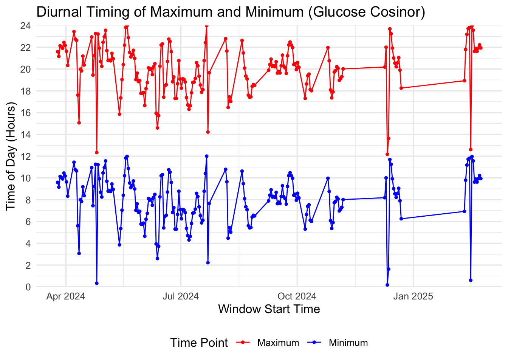
Description: Define Seasons
seasons <- function(date) {
m <- as.numeric(format(date, "%m"))
if (m %in% c(12, 1, 2)) {
return("Winter")
} else if (m %in% c(3, 4, 5)) {
return("Spring")
} else if (m %in% c(6, 7, 8)) {
return("Summer")
} else {
return("Autumn")
}
}Description: Add Seasons to Moving Window Data Frames
moving_window_102 <- moving_window_102 %>%
mutate(Season = sapply(Window_Start, seasons))
moving_window_104 <- moving_window_104 %>%
mutate(Season = sapply(Window_Start, seasons))
moving_window_107 <- moving_window_107 %>%
mutate(Season = sapply(Window_Start, seasons))
moving_window_108 <- moving_window_108 %>%
mutate(Season = sapply(Window_Start, seasons))
moving_window_109 <- moving_window_109 %>%
mutate(Season = sapply(Window_Start, seasons))
moving_window_112 <- moving_window_112 %>%
mutate(Season = sapply(Window_Start, seasons))Description: Calculate Amplitude, Acrophase and Intercept Means per Season
amplitude_means_102 <- moving_window_102 %>%
group_by(Season) %>%
summarise(
mean_amp = mean(Amp, na.rm = TRUE),
sd_amp = sd(Amp, na.rm = TRUE),
mean_int = mean(Intercept, na.rm = TRUE),
sd_int = sd(Intercept, na.rm = TRUE),
mean_acr = mean(Acrophase_Raw_Hours, na.rm = TRUE),
sd_acr = sd(Acrophase_Raw_Hours, na.rm = TRUE),
n = n()
)
amplitude_means_104 <- moving_window_104 %>%
group_by(Season) %>%
summarise(
mean_amp = mean(Amp, na.rm = TRUE),
sd_amp = sd(Amp, na.rm = TRUE),
mean_int = mean(Intercept, na.rm = TRUE),
sd_int = sd(Intercept, na.rm = TRUE),
mean_acr = mean(Acrophase_Raw_Hours, na.rm = TRUE),
sd_acr = sd(Acrophase_Raw_Hours, na.rm = TRUE),
n = n()
)
amplitude_means_107 <- moving_window_107 %>%
group_by(Season) %>%
summarise(
mean_amp = mean(Amp, na.rm = TRUE),
sd_amp = sd(Amp, na.rm = TRUE),
mean_int = mean(Intercept, na.rm = TRUE),
sd_int = sd(Intercept, na.rm = TRUE),
mean_acr = mean(Acrophase_Raw_Hours, na.rm = TRUE),
sd_acr = sd(Acrophase_Raw_Hours, na.rm = TRUE),
n = n()
)
amplitude_means_108 <- moving_window_108 %>%
group_by(Season) %>%
summarise(
mean_amp = mean(Amp, na.rm = TRUE),
sd_amp = sd(Amp, na.rm = TRUE),
mean_int = mean(Intercept, na.rm = TRUE),
sd_int = sd(Intercept, na.rm = TRUE),
mean_acr = mean(Acrophase_Raw_Hours, na.rm = TRUE),
sd_acr = sd(Acrophase_Raw_Hours, na.rm = TRUE),
n = n()
)
amplitude_means_109 <- moving_window_109 %>%
group_by(Season) %>%
summarise(
mean_amp = mean(Amp, na.rm = TRUE),
sd_amp = sd(Amp, na.rm = TRUE),
mean_int = mean(Intercept, na.rm = TRUE),
sd_int = sd(Intercept, na.rm = TRUE),
mean_acr = mean(Acrophase_Raw_Hours, na.rm = TRUE),
sd_acr = sd(Acrophase_Raw_Hours, na.rm = TRUE),
n = n()
)
amplitude_means_112 <- moving_window_112 %>%
group_by(Season) %>%
summarise(
mean_amp = mean(Amp, na.rm = TRUE),
sd_amp = sd(Amp, na.rm = TRUE),
mean_int = mean(Intercept, na.rm = TRUE),
sd_int = sd(Intercept, na.rm = TRUE),
mean_acr = mean(Acrophase_Raw_Hours, na.rm = TRUE),
sd_acr = sd(Acrophase_Raw_Hours, na.rm = TRUE),
n = n()
)Description: Merge Data Sets
# Add identifier columns and bind all together
means_cos_fit <- bind_rows(
amplitude_means_102 %>% mutate(ID = "102"),
amplitude_means_104 %>% mutate(ID = "104"),
amplitude_means_107 %>% mutate(ID = "107"),
amplitude_means_108 %>% mutate(ID = "108"),
amplitude_means_109 %>% mutate(ID = "109"),
amplitude_means_112 %>% mutate(ID = "112")
)Description: Install and Load Packages
library(lme4)Loading required package: Matrix
Attaching package: 'Matrix'The following objects are masked from 'package:tidyr':
expand, pack, unpack library(lmerTest)
Attaching package: 'lmerTest'The following object is masked from 'package:lme4':
lmerThe following object is masked from 'package:stats':
stepDescription: Apply Linear Mixed Effects Model
# Model: Mean amplitude by Season with random intercept for ID
model_acr <- lmer(mean_acr ~ Season + (1 | ID), data = means_cos_fit)
# Summary with fixed effect estimates and significance
summary(model_acr)Linear mixed model fit by REML. t-tests use Satterthwaite's method [
lmerModLmerTest]
Formula: mean_acr ~ Season + (1 | ID)
Data: means_cos_fit
REML criterion at convergence: 105.3
Scaled residuals:
Min 1Q Median 3Q Max
-1.94550 -0.66565 0.04833 0.70021 1.29845
Random effects:
Groups Name Variance Std.Dev.
ID (Intercept) 12.68 3.561
Residual 12.79 3.576
Number of obs: 21, groups: ID, 6
Fixed effects:
Estimate Std. Error df t value Pr(>|t|)
(Intercept) 14.5162 2.2098 10.5981 6.569 4.81e-05 ***
SeasonSpring -0.9526 2.2138 12.0614 -0.430 0.675
SeasonSummer -3.9418 2.2616 11.2911 -1.743 0.108
SeasonWinter -2.0843 2.2616 11.2911 -0.922 0.376
---
Signif. codes: 0 '***' 0.001 '**' 0.01 '*' 0.05 '.' 0.1 ' ' 1
Correlation of Fixed Effects:
(Intr) SsnSpr SsnSmm
SeasonSprng -0.566
SeasonSummr -0.512 0.511
SeasonWintr -0.512 0.511 0.500Description: Plot
ggplot(means_cos_fit, aes(x = Season, y = mean_acr)) +
geom_boxplot(fill = "lightblue", alpha = 0.6) +
geom_jitter(width = 0.2, alpha = 0.5, color = "black") +
theme_minimal() +
labs(title = "Mean Acrophase by Season",
x = "Season",
y = "Mean Acrophase") +
theme(plot.title = element_text(hjust = 0.5))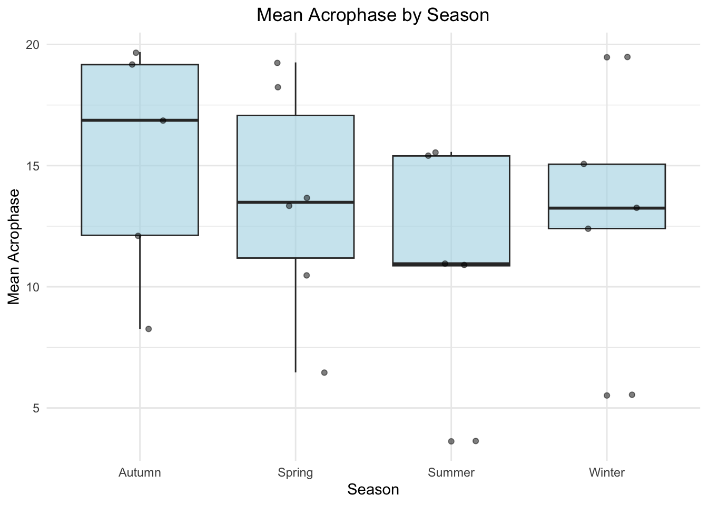
Description: Apply Linear Mixed Effects Model
# Model: Mean amplitude by Season with random intercept for ID
model_amp <- lmer(mean_amp ~ Season + (1 | ID), data = means_cos_fit)
# Summary with fixed effect estimates and significance
summary(model_amp)Linear mixed model fit by REML. t-tests use Satterthwaite's method [
lmerModLmerTest]
Formula: mean_amp ~ Season + (1 | ID)
Data: means_cos_fit
REML criterion at convergence: 63.6
Scaled residuals:
Min 1Q Median 3Q Max
-1.9003 -0.3681 0.2097 0.3587 1.2983
Random effects:
Groups Name Variance Std.Dev.
ID (Intercept) 8.9229 2.9871
Residual 0.5188 0.7203
Number of obs: 21, groups: ID, 6
Fixed effects:
Estimate Std. Error df t value Pr(>|t|)
(Intercept) 8.9276 1.2678 5.4121 7.042 0.000641 ***
SeasonSpring -0.6511 0.4545 11.9604 -1.433 0.177562
SeasonSummer 0.3603 0.4555 11.8518 0.791 0.444456
SeasonWinter -0.3572 0.4555 11.8518 -0.784 0.448286
---
Signif. codes: 0 '***' 0.001 '**' 0.01 '*' 0.05 '.' 0.1 ' ' 1
Correlation of Fixed Effects:
(Intr) SsnSpr SsnSmm
SeasonSprng -0.208
SeasonSummr -0.180 0.501
SeasonWintr -0.180 0.501 0.500Description: Plot
ggplot(means_cos_fit, aes(x = Season, y = mean_amp)) +
geom_boxplot(fill = "lightblue", alpha = 0.6) +
geom_jitter(width = 0.2, alpha = 0.5, color = "black") +
theme_minimal() +
labs(title = "Mean Amplitude by Season",
x = "Season",
y = "Mean Amplitude") +
theme(plot.title = element_text(hjust = 0.5))Description: Apply Linear Mixed Effects Model
# Model: Mean amplitude by Season with random intercept for ID
model_int <- lmer(mean_int ~ Season + (1 | ID), data = means_cos_fit)
# Summary with fixed effect estimates and significance
summary(model_int)Linear mixed model fit by REML. t-tests use Satterthwaite's method [
lmerModLmerTest]
Formula: mean_int ~ Season + (1 | ID)
Data: means_cos_fit
REML criterion at convergence: 102
Scaled residuals:
Min 1Q Median 3Q Max
-1.7994 -0.5652 0.1904 0.4061 1.1980
Random effects:
Groups Name Variance Std.Dev.
ID (Intercept) 5.541 2.354
Residual 12.320 3.510
Number of obs: 21, groups: ID, 6
Fixed effects:
Estimate Std. Error df t value Pr(>|t|)
(Intercept) 102.405 1.875 13.602 54.621 <2e-16 ***
SeasonSpring -3.226 2.155 12.100 -1.497 0.1601
SeasonSummer -2.869 2.220 11.235 -1.292 0.2222
SeasonWinter -4.562 2.220 11.235 -2.055 0.0639 .
---
Signif. codes: 0 '***' 0.001 '**' 0.01 '*' 0.05 '.' 0.1 ' ' 1
Correlation of Fixed Effects:
(Intr) SsnSpr SsnSmm
SeasonSprng -0.641
SeasonSummr -0.592 0.515
SeasonWintr -0.592 0.515 0.500Description: Plot
ggplot(means_cos_fit, aes(x = Season, y = mean_int)) +
geom_boxplot(fill = "lightblue", alpha = 0.6) +
geom_jitter(width = 0.2, alpha = 0.5, color = "black") +
theme_minimal() +
labs(title = "Mean Intercept by Season",
x = "Season",
y = "Mean Intercept") +
theme(plot.title = element_text(hjust = 0.5))Description: Bind Data Sets
# IDs und zugehörige DataFrames
id_list <- c(102, 104, 107, 108, 109, 112)
# Liste der DataFrames in gleicher Reihenfolge (z. B. vorher erstellt)
moving_window_list <- list(
moving_window_102,
moving_window_104,
moving_window_107,
moving_window_108,
moving_window_109,
moving_window_112
)
# Füge die ID zu jedem DataFrame hinzu
moving_window_data <- Map(function(df, id) {
df$ID <- id
return(df)
}, moving_window_list, id_list)
# Binde alles zusammen
moving_window_data <- bind_rows(moving_window_data)Description: Code for Polar Plot (ID 102)
# 1. Umrechnung der Zeiten in Radianten (0 bis 2pi)
moving_window_102 <- moving_window_102 %>%
mutate(
Min_Rad = (Min_Time_Hours / 24) * 2 * pi,
Max_Rad = (Max_Time_Hours / 24) * 2 * pi
)
# 2. Durchschnittliche Min und Max (Mittelwerte)
avg_min_rad <- mean(moving_window_102$Min_Rad)
avg_max_rad <- mean(moving_window_102$Max_Rad)
# 3. Schwankungsbereich (z.B. +/- 1 Standardabweichung)
min_lower <- avg_min_rad - sd(moving_window_102$Min_Rad)
min_upper <- avg_min_rad + sd(moving_window_102$Min_Rad)
max_lower <- avg_max_rad - sd(moving_window_102$Max_Rad)
max_upper <- avg_max_rad + sd(moving_window_102$Max_Rad)
# 5. Pointer (Zeiger) mit Radius 0 bis 1 am Mittelwert-Winkel
pointers <- data.frame(
angle = c(avg_min_rad, avg_max_rad),
label = c("Avg Min", "Avg Max"),
color = c("blue", "red")
)Description: Standard Deviation
# Rechteck um Avg Max (±1 SD im Winkel, Radius von 0.95 bis 1)
max_rect <- data.frame(
xmin = max_lower,
xmax = max_upper,
ymin = 0.95,
ymax = 1
)Description: Create Polar Plot for 102
ggplot() +
# Rechteck als Unsicherheitsbereich um Max
geom_rect(data = max_rect,
aes(xmin = xmin, xmax = xmax, ymin = ymin, ymax = ymax),
fill = "pink", alpha = 0.3) +
# Zeiger
geom_segment(data = pointers,
aes(x = angle, xend = angle, y = 0, yend = 1, color = label),
linewidth = 1.5) +
coord_polar(start = 0) + # 0 Uhr oben
scale_x_continuous(
breaks = seq(0, 2*pi, length.out = 25),
labels = 0:24,
limits = c(0, 2*pi)
) +
scale_y_continuous(limits = c(0, 1)) +
scale_color_manual(values = c("Avg Min" = "blue", "Avg Max" = "pink")) +
labs(title = "Polarplot mit Standardabweichungs-Bereich um Max-Zeit") +
theme_minimal() +
theme(
axis.title.y = element_blank(),
panel.grid.major = element_line(color = "grey80"),
panel.grid.minor = element_blank(),
legend.position = "bottom"
)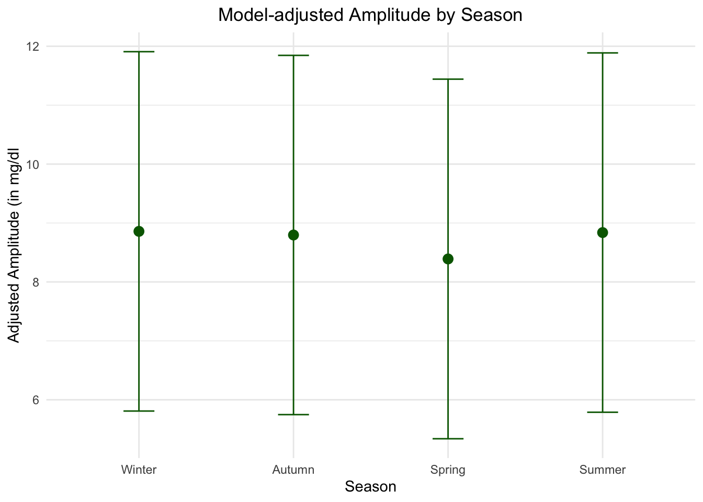
# Rad-Winkel berechnen
moving_window_data <- moving_window_data %>%
mutate(Max_Rad = (Max_Time_Hours / 24) * 2 * pi)
# Initialize Data Frames for Pointer and SD-Rectangles
all_pointers <- data.frame()
all_rects <- data.frame()
# Loop for all IDs
for (id in id_list) {
df_id <- moving_window_data %>% filter(ID == id)
avg_max <- mean(df_id$Max_Rad, na.rm = TRUE)
sd_max <- sd(df_id$Max_Rad, na.rm = TRUE)
rect_ymin <- 1 - 0.05 * (which(id_list == id))
rect_ymax <- rect_ymin + 0.05
all_pointers <- bind_rows(all_pointers, data.frame(
angle = avg_max,
label = paste0("Avg Max ", id)
))
all_rects <- bind_rows(all_rects, data.frame(
xmin = avg_max - sd_max,
xmax = avg_max + sd_max,
ymin = rect_ymin,
ymax = rect_ymax,
label = paste0("Avg Max ", id)
))
}
# Add IDs to data frames
library(stringr)
all_pointers <- all_pointers %>%
mutate(ID = str_extract(label, "\\d+"))
all_rects <- all_rects %>%
mutate(ID = str_extract(label, "\\d+"))
# Plot
ggplot() +
geom_rect(data = all_rects,
aes(xmin = xmin, xmax = xmax, ymin = ymin, ymax = ymax, fill = ID),
alpha = 0.3) +
geom_segment(data = all_pointers,
aes(x = angle, xend = angle, y = 0, yend = 1, color = ID),
linewidth = 1.2) +
coord_polar(start = 0) +
scale_x_continuous(
breaks = seq(0, 2 * pi * 23/24, length.out = 24),
labels = 0:23,
limits = c(0, 2 * pi)) +
scale_y_continuous(limits = c(0, 1), labels = NULL) +
labs(
title = "Acrophase + SD for all IDs",
x = "Time of Day",
y = NULL,
color = "Pointer",
fill = "Standard Deviation"
) +
theme_minimal() +
theme(
axis.title.y = element_blank(),
panel.grid.major = element_line(color = "grey80"),
panel.grid.minor = element_blank(),
legend.position = "bottom"
)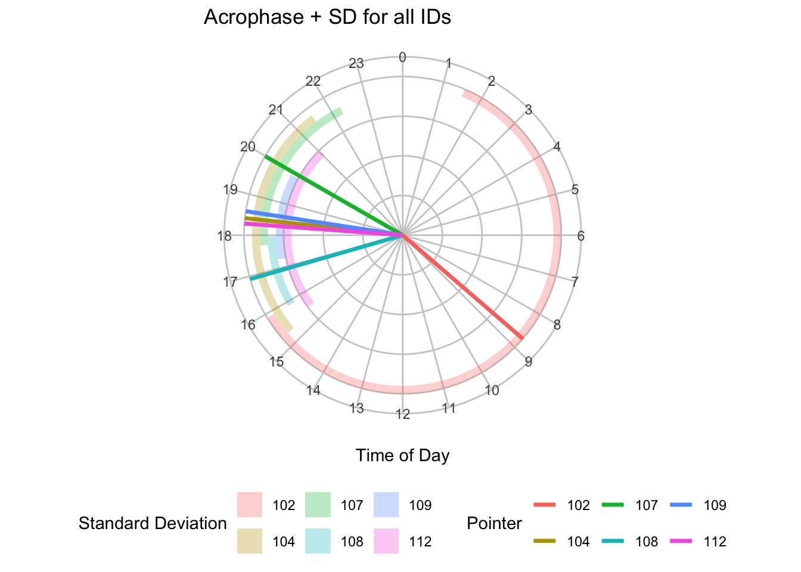
library(dplyr)
library(ggplot2)
# --- Feste Reihenfolge der IDs für Farben & vertikale Platzierung ---
id_list <- sort(unique(moving_window_data$ID))
# --- Zusammenfassung: Durchschnitt & SD des Maxima pro Season & ID ---
season_summary <- moving_window_data %>%
group_by(ID, Season) %>%
summarise(
avg_max_rad = mean((Max_Time_Hours / 24) * 2 * pi, na.rm = TRUE),
sd_max_rad = sd((Max_Time_Hours / 24) * 2 * pi, na.rm = TRUE),
.groups = "drop"
) %>%
mutate(
angle = avg_max_rad,
xmin = avg_max_rad - sd_max_rad,
xmax = avg_max_rad + sd_max_rad,
ID = factor(ID, levels = id_list),
# dynamische vertikale Positionen, um Überlappung zu vermeiden
rect_ymin = 0.95 - 0.05 * (as.numeric(ID) - 1),
rect_ymax = rect_ymin + 0.05
)
# --- Zeiger-Daten extrahieren ---
pointers_seasons <- season_summary %>%
select(ID, Season, angle)
# --- Rechteck-Daten extrahieren ---
rects_seasons <- season_summary %>%
select(ID, Season, xmin, xmax, rect_ymin, rect_ymax)
# --- Plot erstellen ---
ggplot() +
geom_rect(data = rects_seasons,
aes(xmin = xmin, xmax = xmax, ymin = rect_ymin, ymax = rect_ymax, fill = ID),
alpha = 0.3, color = NA) +
geom_segment(data = pointers_seasons,
aes(x = angle, xend = angle, y = 0, yend = 1, color = ID),
linewidth = 1.2) +
coord_polar(start = 0) +
scale_x_continuous(
breaks = seq(0, 2 * pi * 23/24, length.out = 24),
labels = 0:23,
limits = c(0, 2 * pi)
) +
scale_y_continuous(limits = c(0, 1.05), labels = NULL) +
labs(
title = "Acrophase + SD per Season",
x = "Time of Day",
y = NULL,
color = "ID",
fill = "ID"
) +
facet_wrap(~Season) +
theme_minimal() +
theme(
axis.title.y = element_blank(),
panel.grid.major = element_line(color = "grey80"),
panel.grid.minor = element_blank(),
legend.position = "bottom"
)